Model Customisation
Externally Provided Geometry Formats
Placements of Geometry
Fields
BDSIM provides the facility to overlay magnetic, electric, or combined electromagnetic fields on an element, as defined either by an externally provided field map or by a ‘pure’ field from an equation already included in BDSIM. A field map is an array of evenly space points in Cartesian coordinates that define the field as a 3-vector at that point.
A field can be applied to an element or a piece of geometry for:
only the “vacuum” volume(s) (“fieldVacuum”)
only the “outer” volume(s) outside the vacuum (i.e. the yoke) (“fieldOuter”)
or one full map for the whole element. (“fieldAll”)
BDSIM allows any Geant4 integrator to be used to calculate the motion of the particle, which can be chosen given knowledge of the smoothness of the field or the application (default is a 4th order Runge Kutta). BDSIM also provides a selection of 1-4D interpolators that are used to provide the field value in between the data points in the supplied field map.
To overlay a field, one must define a field ‘object’ in the parser and then ‘attach’ it to an element.
f1: field, type="bmap3d", magneticFile="bdsim3d:fieldmap.dat.gz";
e1: element, geometryFile="gdml:aPieceOfGeometry.gdml", fieldAll="f1";
q1: quadrupole, l=20*cm, k1=0.1, fieldOuter="f1";
h1: hkicker, l=1*m, fieldVacuum="f1";
These are all different uses of the same field map. e1 uses a generic element with externally provided geometry with a field map for all of the geometry. q1 uses a BDSIM-generated quadrupole with a perfect quadrupolar field in the beam pipe and vacuum and the field map for the yoke and surrounding air in between the yoke and beam pipe. h1 uses a BDSIM-generated horizontal kicker magnet and BDSIM multipolar yoke field (the default) but with a custom field map for inside the vacuum only. The field map is a 3D field map in BDSIM file format and uses cubic interpolation by default.
fieldobjects are described below at: Field Map Definition.Pure fields are described at: Pure Fields Types.
Accepted file formats for a field object are described below at: File Formats.
Specific field map file format descriptions are described here: Field Map File Formats.
Allowable different combinations of dimension are described here: BDSIM Field Format Different Dimensions.
Field General Notes
Some notes on field maps in BDSIM:
Fields are in a local Cartesian coordinate system with respect to the origin of the element they are attached to.
The field may be attached to everything “fieldAll”; the vacuum volume “fieldVacuum”, or the yoke “fieldOuter”.
Magnetic and electric field maps are specified in separate files and may have different interpolators.
Fields may have up to four dimensions.
The dimensions are (by default) in order \(x,y,z,t\). For example, specifying a 3D field will be \(x,y,z\) and a 2D field \(x,y\).
Fields with different dimensions (e.g. \(x,z\) and constant \(y\)) can be used.
Cubic interpolation is used by default unless otherwise specified.
Geant4’s classical 4th order Runge Kutta is used as the default numerical integrator.
For BDSIM format fields, the user can specify different dimension with the other dimensions being assumed constant. For example, a field that varies in \(x,z\) is possible (assumed constant in \(y\)). For BDSIM format fields, this is detected automatically by the column labelling and the keys in the header of the file that specify the ranges in each dimension. The dimensions must however be in ascending or descending order.
Note
Currently only regular (evenly spaced) grids are supported with field maps. It would require significant development to extend this to irregular grids. It’s strongly recommended the user re-sample any existing field map into a regular grid. A regular grid is also much faster for tracking purposes.
Warning
The maximum step length of a particle through an element is by default 10km in Geant4.
BDSIM reduces this to 110% the length of an element. In the case of a field map, the
step limit is not dynamically derived (in Geant4) from the variation in the field.
Too large a step may mean that the numerical integration along the step may not
‘see’ the variations in the field and therefore calculate the wrong motion. For
example, imagine a wiggler or undulator field map and only a few select points
along it’s length being queried - it may appear as a dipole field!
Therefore, when we use a field map in BDSIM, the step length is limited to the
minimum distance between points in any dimension of the field map. Depending on
how much the field map varies from point to point (density of samples) then the
user may wish to reduce this further with the parameter maximumStepLength
below in the field definition. You may also wish to visualise the individual points
as described in Visualising Step Points.
Minimal Example
Here is a minimal example of a magnetic field in BDSIM format:
detfield: field, type="bmap3d",
magneticFile="bdsim3d:fieldmap.dat.gz";
This will use the “g4classicalrk4” integrator for the particle motion and the “cubic” (in 3D) interpolation by default.
Here is example syntax to define a field object named ‘somefield’ in the parser and overlay it onto a drift pipe where it covers the full volume of the drift (not outside it though):
somefield: field, type="ebmap2d",
eScaling = 3.0,
bScaling = 0.4,
integrator = "g4classicalrk4",
magneticFile = "poisson2d:/Path/To/File.TXT",
magneticInterpolator = "nearest",
electricFile = "poisson2d:/Another/File.TXT",
electricInterpolator = "linear";
d1: drift, l=0.5*m, aper1=4*cm, fieldAll="somefield";
Each beam line element will allow “fieldAll”, “fieldVacuum” and “fieldOuter” to be specified.
Field Map Definition
When defining a field object, the following parameters can be specified. Usually,
only a small number of these possible parameters are needed. An example is given below.
Parameter |
Description |
|---|---|
type |
See type table below. |
eScaling |
A numerical scaling factor that all electric field vectors’ amplitudes will be multiplied by |
bScaling |
A numerical scaling factor that all magnetic field vectors’ amplitudes will be multiplied by |
integrator |
The integrator used to calculate the motion of the particle in the field. See below for full list of supported integrators. |
globalTransform |
Boolean. Whether a transform from local curvilinear coordinates to global coordinates should be provided (default true). |
magneticFile |
“format:filePath” - see formats below. |
magneticInterpolator |
Which interpolator to use - see below for a full list. |
electricFile |
“format:filePath” - see formats below. |
electricInterpolator |
Which interpolator to use - see below for a full list. |
magneticReflection |
String of white-space separate relfection names to use. |
electricReflection |
String of white-space separate relfection names to use. |
fieldModulator |
Name of modulator object to apply to the field definition. |
x |
x-offset from element it’s attached to |
y |
y-offset from element it’s attached to |
z |
z-offset from element it’s attached to |
t |
t-offset from Global t in seconds |
phi |
Euler phi rotation from the element the field is attached to |
theta |
Euler theta rotation from the element the field is attached to |
psi |
Euler psi rotation from the element the field is attached to |
axisAngle |
(Boolean) Use axis angle rotation variables. Default 0 (Euler). |
axisX |
x-component of axis defining axis / angle rotation |
axisY |
y-component of axis defining axis / angle rotation |
axisZ |
z-component of axis defining axis / angle rotation |
angle |
angle (rad) of defining axis / angle rotation |
autoScale |
This automatically calculates the field gradient at the origin and the field magnitude will be automatically scaled according to the normalised k strength (such as k1 for a quadrupole) for the magnet it’s attached to. Only applicable for when attached to fieldOuter of aa magnet. |
maximumStepLength |
The maximum permitted step length through the field. (m) No length smaller than 1 micron is permitted currently. |
electricSubField |
Name of another field object like this one that will be used as a electric ‘sub’ field that overlays this one. |
magneticSubField |
Name of another field object like this one that will be used as a magnetic ‘sub’ field that overlays this one. |
fieldParameters |
A string containing a white-space separated list of
|
frequency |
Frequency (Hz) of the time-varying modulation of the field . |
phase |
Phase offset (rad) of the time-dependent modulation. It is connected to tOffset and can be converted into it. |
tOffset |
Global time offset (s) of the time-dependent modulation. It is internally translated into the phase offset. |
modulator |
Function that describes the time-variation of the field. Currently, sin/SIN/Sin and cos/COS/Cos can be used. |
Advanced parameter to be used with caution:
maximumStepLengthOverride |
Maximum step length (m) in the field that will override the length calcualted from the minimal field map grid spacing. This overrides maximumStepLength and the one calculated. |
Simple example:
detectorField: field, type="bmap2d",
magneticFile="bdsim2d:fieldmap.dat";
This will use a BDSIM format magnetic (only) field map. By default it will have cubic interpolation and use a 4th order Runge Kutta integrator.
The maximum step length will be the minimum of:
maximumStepLengthspecified in the field definition110% of the element length that the field is attached to
the global maximum step length
the minimum spacing in any dimension of the field map
In the case of a 4D field, the velocity is assume to be c, the speed of light,
for the spatial distance calculated from this.
Notes:
See Sub-Fields below for more details on overlaying two field maps in one.
Either axis angle (with unit axis 3-vector) or Euler angles can be used to provide the rotation between the element the field maps are attached to and the coordinates of the field map. Use axisAngle=1 to use the axis angle rotation scheme.
A right-handed coordinate system is used in Geant4, so positive x is out of a ring.
The time-modulation of the fields is off by default. It is implemented for field maps (E, B and EM) in up to all three spatial dimensions. It is not necessary to define both, phase and tOffset, as they have the same physical meaning. The modulation is calculated according to \(\sin(2\pi ft-\varphi)\) or \(\cos(2\pi ft-\varphi)\) with \(f\) being the frequency of the modulation, \(t\) the global time of the particle and \(\varphi\) the shift wrt. the beginning of the oscillation.
AutoScaling
BDSIM includes a feature called “autoScale” that allows the gradient to be calculated of a field map when attached to the yoke of a magnet. The field map is then scaled by the required factor to match the (normalised) strength of the magnet, e.g. k1 for a quadrupole.
This only works when autoScale=1 is used in the field definition and when the field is specified for the fieldOuter parameter of a magnet such as a quadrupole, sextupole, or octupole.
For example:
f1: field, type="bmap2d", magnetifFile="bdsim:fieldmap.dat";
q1: quadrupole, l=2.99*m, fieldOuter="f1", k1=-0.03571027562065992;
Example print out when running BDSIM would be:
BDSIM Field Format> Loading "/Users/lnevay/Desktop/gradient/QNRX0610005_-192.59A.map"
BDSIM Field Format> Loaded 2099 lines from file
BDSIM Field Format> (Min | Max) field magnitudes in loaded file (before scaling): (0 | 4.12849187851)
autoScale> Calculated k1 = -0.0430970787713
autoScale> Ratio of supplied strength to calculated map strength: 0.828600838822
autoScale> New overall scaling factor: 0.828600838822
Field Types
These are not case sensitive.
Type String |
Description |
|---|---|
bmap1d |
1D magnetic only field map |
bmap2d |
2D magnetic only field map |
bmap3d |
3D magnetic only field map |
bmap4d |
4D magnetic only field map |
emap1d |
1D electric only field map |
emap2d |
2D electric only field map |
emap3d |
3D electric only field map |
emap4d |
4D electric only field map |
ebmap1d |
1D electric-magnetic field map |
ebmap2d |
2D electric-magnetic field map |
ebmap3d |
3D electric-magnetic field map |
ebmap4d |
4D electric-magnetic field map |
Note
Some “pure” fields can be used also. Their names for the “type” are listed in Field Names and Parameters.
Pure Fields Types
“Pure” fields are ones that are described by equations in BDSIM. These are used for all the generic accelerator components. Note, we may use custom numerical integrators for tracking in accelerator components that ignore the field that is required to be there for Geant4. However, these integrators often fall-back to this field when tracking a particle in a direction they can’t handle.
The pure fields can be used as a field object in BDSIM. The type in the
field definition must be exactly one of the internal names used for the field name.
See field types here: Field Names and Parameters.
No units or commas may be used inside the
fieldParametersstring.The
fieldParametersstring should have parameter=value pairs white-space separated.Normalised field strengths are used with respect to the beam particle and design energy.
Example:
f1: field, type="dipole", fieldParameters="field=1.2 by=1.0";
For a dipole field with value 1.2 T and along the unit Y axis (local). The other components of the unit vector associated with it will default to 0.
Field Reflections and Transforms
It is possible to exploit symmetry in a field map and use a field map with only some fraction of the complete expected map. This speeds up start up time as there is less to load and saves memory at run-time as there is less to store in memory.
Several operations are available and may be combined arbitrarily. These are specified
in the field definition in either magneticReflection or electricReflection.
The reflection string must be a white-space separated list (if more than one) of the below names.
For arrays to be reflected it is recommended that they run from 0 in that dimension in a positive direction. e.g. a 1D map in \(z\) to be reflected would ideally run from \(z = 0 cm\) to for example, \(z = 20 cm\), i.e. a positive value. However, the code will tolerate it going in a positive direction but from a negative value towards 0.
The values exactly on the axis of reflection come from the original field map.
Warning
Any partial field map used for a reflection must either have its first data point on the axis of reflection or an integer number of array steps from it. e.g. A 1D array in z to be reflected runs from 0 cm to 20 cm - this OK. Another array in z runs from 1 cm to 21 cm with 5 points - this is not OK. This is because the step size is (21-1 / 5 = 4 cm). The distance from the reflection axis is 1 cm. This would cause an irregularly spaced grid which there is no provision for in BDSIM for interpolation. The tolerance for this calculation is 5% of the step size. The code will proceed, but the map may be distorted at the boundaries.
Note
It is strongly recommended to visualise a reflected (or indeed any) field map before using it for a physics study to ensure it is correctly prepared. See Field Map Validation and Field Map Visualisation - Queries.
Reflection Name |
Description |
|---|---|
flipx |
\(\pm x \mapsto \mp x\) |
flipy |
\(\pm y \mapsto \mp y\) |
flipz |
\(\pm z \mapsto \mp z\) |
flipt |
\(\pm t \mapsto \mp t\) |
reflectx |
\(x \mapsto |x|\) |
reflecty |
\(y \mapsto |y|\) |
reflectz |
\(z \mapsto |z|\) |
reflectt |
\(t \mapsto |t|\) |
reflectxydipole (*) |
Reflect a positive x and y quadrant to all four quadrants with appropriate flips to make a dipolar field |
reflectxzdipole (*) |
Reflect a dipole field about the x-z plane but don’t reflect the y component of the field to make a dipolar field |
reflectyzdipole |
equivalent to reflectx |
reflectzsolenoid |
Reflect about \(z = 0\). Also, for \(z < 0\), flip the x and y components of the field |
reflectxyquadrupole |
Reflect a positive x and y quadrant to all four quadrants with appropriate flips to make a quadrupolar field |
(*) See pictorial representation below
For reflectxydipole, \(x \mapsto |x|\) and \(y \mapsto |y|\)
for the array look up. Then the value found at that location is changed as follows:
if \(x < 0 \wedge y \geqslant 0\), \(B_x \mapsto -B_x\)
if \(x \geqslant 0 \wedge y < 0\), \(B_x \mapsto -B_x\)
if \(y < 0\), \(B_z \mapsto -B_z\)
\(\wedge\) is logical AND
For reflectxzdipole, \(y \mapsto |y|\) for the array look up. Then
the value found at that location is changed as follows:
if \(y < 0\), \(B_x \mapsto -B_x\)
For reflectxzsolenoid, \(z \mapsto |z|\) for the array look up. Then
the value found at that location is changed as follows:
if \(z < 0\), \(B_x \mapsto -B_x\)
if \(z < 0\), \(B_y \mapsto -B_y\)
For reflectxyquadrupole, \(x \mapsto |x|\) and \(y \mapsto |y|\)
for the array look up. Then the value found at that location is changed as follows:
if \(x < 0\), \(B_y \mapsto -B_y\)
if \(y < 0\), \(B_x \mapsto -B_x\)
This logic would also be applicable for a dual beam accelerator dipole such as the LHC dipole magnets where the dipole fields in each pipe have opposite directions to bend the counter-circulating beams.
Examples:
magneticReflection="flipx";
magneticReflection="flipx flipy";
There are many practical examples in bdsim/examples/features/fields/maps_transformed/*.gmad
where the example field maps are generated by querying a standard BDSIM component. In the case
of a dipole field, typically, a hkicker is used as the magnet is built without an angle to
simplify things.
reflectxydipole
{kind=link}
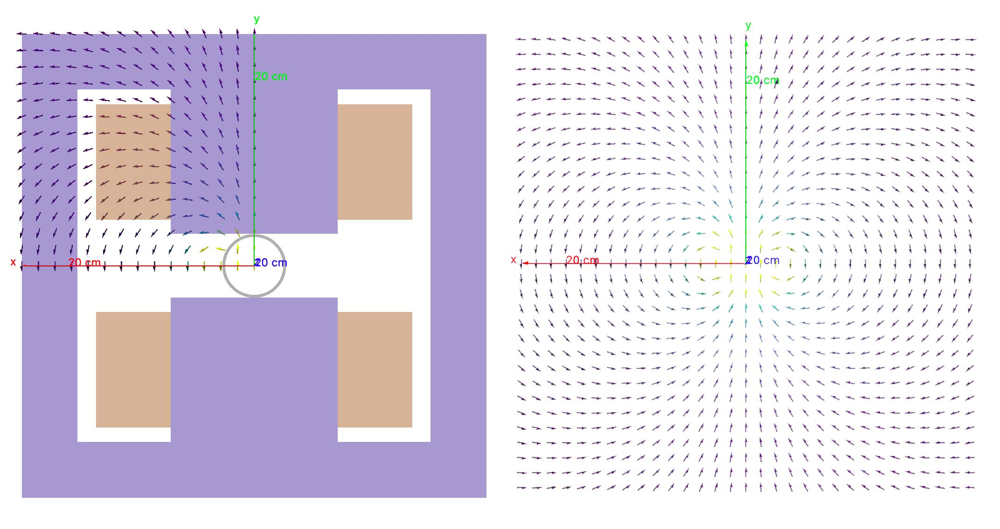
Original dipole field from positive x-y quadrant (left), reflected using
reflectxydipole (right). The view is with the z axis going into
the page and the the coordinate system is right-handed.
reflectxzdipole
{kind=link}
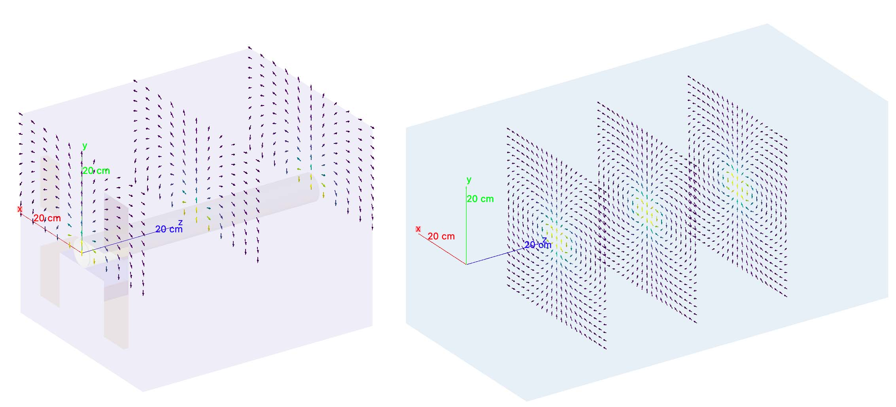
Original dipole field from positive y half (left), reflected using
reflectxzdipole (right).
Modulators
It is possible to scale or ‘modulate’ the field of any component in bdsim using a “modulator” object. This conceptually can be a function of time, event number and turn number for example. Only certain functions are provided but more can be added easily by the developers if required - see Feature Request.
Whatever magnetic or electric field would be provided by the original field object is multiplied by the (scalar) numerical factor from the modulator.
A modulator is defined in the in put as follows:
objectname: modulator, parameter1=value, parameters=value,... ;
The modulator is then ‘attahced’ to the beam line element in its definition:
m1: modulator, type="sint", frequency=1*kHz, amplitudeOffset=1, phase=pi/2;
rf1: rfcavity, l=1*m, frequency=450*MHz, fieldModulator="m1";
The function is described by the type parameter which can be one of the following:
sint- sinusoid as a function of (local) timesinglobal- sinusoid as a function of (global) time with no synchronous offset in timetophatt- a top hat function as a function of timelineart- similar to top hat but function depends linearly on time
Each is described below.
sint
A sinusoidal modulator as a function of time T of the particle. The factor is described by the equation:
The oscillator will by default have a zero phase that is synchronous with the centre of the object it’s attached to in the beam line.
tOffset will take precedence over phase
Parameter |
Description |
Required |
Default |
Units |
|---|---|---|---|---|
amplitudeOffset |
Offset of numerical factor |
No |
0 |
None |
amplitudeScale |
Multiplier of scale |
No |
1 |
None |
frequency |
Frequency of oscillator in (>= 0) |
Yes |
0 |
Hz |
phase |
Phase relative to synchronous phase |
No |
0 |
rad |
tOffset |
Optional time to use in place of phase |
No |
0 |
s |
singlobalt
This has the same equation as sint, however, no synchronous offset is added to the phase. So, if one instance of this modulator is used on several elements, they will all oscillate at the same time with the same phase, so a beam particle may see a different effect as it passes each element.
The same parameters as sint apply.
phase takes precedence over offsetT.
tophatt
A function that is on at a constant value inside a time window and 0 everywhere else in time. It is described by the equation:
Parameter |
Description |
Required |
Default |
Units |
|---|---|---|---|---|
T0 |
Global starting time for ‘on’ |
Yes |
0 |
s |
T1 |
Global time for ‘off’ |
Yes |
0 |
s |
amplitudeScale |
Multiplier of scale |
No |
1 |
None |
lineart
A function that depends linearly on time inside a time window and is 0 everywhere else in time. It is described by the equation:
Parameter |
Description |
Required |
Default |
Units |
|---|---|---|---|---|
T0 |
Global starting time for ‘on’ |
Yes |
0 |
s |
T1 |
Global time for ‘off’ |
Yes |
0 |
s |
amplitudeScale |
Multiplier of scale |
No |
0 |
1/s |
amplitudeOffset |
Offset of numerical factor |
No |
1 |
None |
Integrators
An integrator is an algorithm that calculates the particle motion in a field. There are many algorithms - some fast, some more precise, some work only with certain fields.
The following integrators are provided. The majority are interfaces to Geant4 integrators. g4classicalrk4 is typically the recommended default and is very robust. g4cashkarprkf45 is similar but slightly less CPU-intensive. For version Geant4.10.4 onwards, g4dormandprince745 is the default recommended by Geant4 (although not the BDSIM default currently). Note: any integrator capable of operating on EM fields will work on solely B- or E-fields.
We recommend looking at the source .hh files in the Geant4 source code for an explanation of each, as this is where they are documented. The source files can be found in <geant4-source-dir>/source/geometry/magneticfield/include.
String |
B/EM |
Time Varying |
Required Geant4 Version (>) |
|---|---|---|---|
g4cashkarprkf45 |
EM |
Y |
10.0 |
g4classicalrk4 |
EM |
Y |
10.0 |
g4constrk4 |
B |
N |
10.0 |
g4expliciteuler |
EM |
Y |
10.0 |
g4impliciteuler |
EM |
Y |
10.0 |
g4simpleheum |
EM |
Y |
10.0 |
g4simplerunge |
EM |
Y |
10.0 |
g4exacthelixstepper |
B |
N |
10.0 |
g4helixexpliciteuler |
B |
N |
10.0 |
g4helixheum |
B |
N |
10.0 |
g4heliximpliciteuler |
B |
N |
10.0 |
g4helixmixedstepper |
B |
N |
10.0 |
g4helixsimplerunge |
B |
N |
10.0 |
g4nystromrk4 |
B |
N |
10.0 |
g4rkg3stepper |
B |
N |
10.0 |
g4bogackishampine23 |
EM |
Y |
10.3 |
g4bogackishampine45 |
EM |
Y |
10.3 |
g4dolomcprik34 |
EM |
Y |
10.3 |
g4dormandprince745 |
EM |
Y |
10.3 |
g4dormandprincerk56 |
EM |
Y |
10.3 |
g4dormandprincerk78 |
EM |
Y |
10.3 |
g4tsitourasrk45 |
EM |
Y |
10.3 |
g4rk547feq1 |
EM |
Y |
10.4 |
g4rk547feq2 |
EM |
Y |
10.4 |
g4rk547feq3 |
EM |
Y |
10.4 |
Interpolators
The field may be queried at any point inside the volume, so an interpolator is required to provide a value of the field in between specified points in the field map. There are many algorithms that can be used to interpolate the field map data. A mathematical description of the ones provided in BDSIM as well as example plots is shown in Field Map Interpolators.
This string is case-insensitive.
String |
Description |
|---|---|
nearest |
Nearest neighbour interpolation |
linear |
Linear interpolation |
cubic |
Cubic interpolation |
linearmag |
Linear and magnitude interpolation |
Internally there is a different implementation for different numbers of dimensions and this is automatically chosen based on the number of dimensions in the field map type.
File Formats
Note
BDSIM field maps by default have units \(cm, s\) and \(T\) for magnetic field and \(V/m\) for electric field.
Format |
Description |
|---|---|
bdsim1d |
1D BDSIM format file (Units \(cm, s, T, V/m\)) |
bdsim2d |
2D BDSIM format file (Units \(cm, s, T, V/m\)) |
bdsim3d |
3D BDSIM format file (Units \(cm, s, T, V/m\)) |
bdsim4d |
4D BDSIM format file (Units \(cm, s, T, V/m\)) |
poisson2d |
2D Poisson Superfish SF7 file |
poisson2dquad |
2D Poisson Superfish SF7 file for 1/8th of quadrupole |
poisson2ddipole |
2D Poisson Superfish SF7 file for positive quadrant that’s reflected to produce a full windowed dipole field |
Field maps in the following formats are accepted:
BDSIM’s own format (both uncompressed
.datand gzip compressed files.gzmust be in the file name for this to load correctly.)Superfish Poisson 2D SF7
These are described in detail below. More field formats can be added relatively easily - see Feature Request. A detailed description of the formats is given in Field Map File Formats. A preparation guide for BDSIM format files is provided here BDSIM Field Map File Preparation.
Sub-Fields
A ‘sub-field’ is where one field map can be overlaid on top of another. The sub-field should be smaller and will simply take precedence on the main field within its range. This is useful if for example a precise field detailed field map is required for a smaller region but a coarser field map is suitable for the majority of the component. Remember, field maps must contain regularly spaced data so if a high density of points is required in one point, this would lead to an excessively large field map for the rest of the element which may not be necessary and slow the loading and running of the simulation.
Inside the domain of the sub-field, only its interpolated value is used. The transition between the sub and main field is hard and it is left to the user to ensure that the field values are continuous to make physical sense.
Currently only sub-magnetic and sub-electric fields are supported (no sub-electromagnetic fields).
The tilt or rotation of the field map (with respect to the element it is attached to) does not apply to the region of applicability for the sub-field. However, the field is tilted appropriately.
The spatial (only) offset (x,y,z) of the sub-field applies to it independently of the offset of the main outer field.
If a 2D field is used both fields apply infinitely in z in a 3D model, therefore the sub-field will always take precedence for any z value as long as x and y are inside its limits.
Below is an example of a sub-field that can be found in bdsim/examples/features/fields/subfield:
fpipe: field, type="bmap2d",
magneticFile="bdsim2d:inner.dat",
magneticInterpolator="nearest",
x=-10*cm;
fyoke: field, type="bmap2d",
magneticFile="bdsim2d:outer.dat",
magneticInterpolator="cubic",
magneticSubField="fpipe";
d1: drift, l=0.5*m, aper1=0.5*m, fieldAll="fyoke";
First a smaller field map is defined called “fpipe”. Secondly, a larger coarser field map is created
called “fyoke” that crucially refers to the magneticSubField="fpipe". The sub-field applies
only in the range of the field map taken from the maximum and minimum coordinates in each dimension
when loading the field map. In the provided example, the “inner.dat” field map defines 4 points in a
2D square at +- 20 cm in both x and y with the same B field vector. Nearest neighbour interpolation
is used to ensure a perfect uniform field inside these points.
The second field definition using “outer.dat” ranges from +- 50 cm with a similar box of 4 points in 2D.
Each point has the same field value but with an opposing x component. The Python script used to create
these simple field maps is included alongside the example. The example combined field map is shown
in the visualiser below. The magnetic field lines were visualised using the Geant4 visualiser command
/vis/scene/add/magneticField 10 lightArrow.
{kind=link}
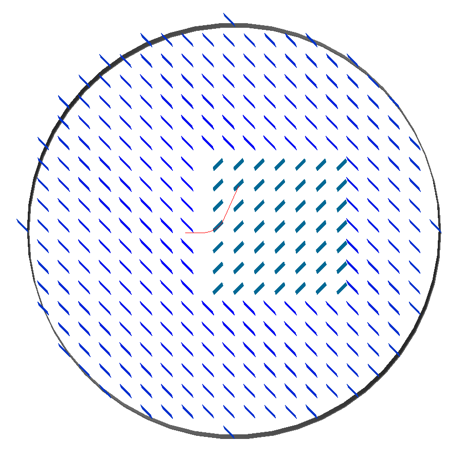
Field Map Visualisation
Recent versions of Geant4 (> 10.5) provide a mechanism in the visualiser to visualise magnetic fields. The following command can be used to add magnetic field lines to the visualisation.
/vis/scene/add/magneticField 10 lightArrow
This may take some time due to the Geant4 visualiser drawing many arrows individually. The number 10 here sets a density of points. If few useful arrows appear, then this number can be increased. Note, the time taken will go with the cube (i.e. N^3) of this number. Suggested values are 10, 30, 40. An example can be seen above in the Sub-Fields section.
Geant4 attempts to identify which volumes have fields and distribute the appoints accordingly in the global Cartesian frame. For a more controllable distribution, see Field Map Visualisation - Queries.
Field Map Visualisation - Queries
Any query object (see Field Map Validation) can be drawn on the screen in the visualiser. A query defines a grid of points where the field is queried or found out. By default, this is written to a field map file. Any of these queries can also be shown in the visualiser. This is controlled by the command:
/bds/field/drawQuery <query-object-name>
For a list of queries, one can do:
/bds/field/listQueries
{kind=link}
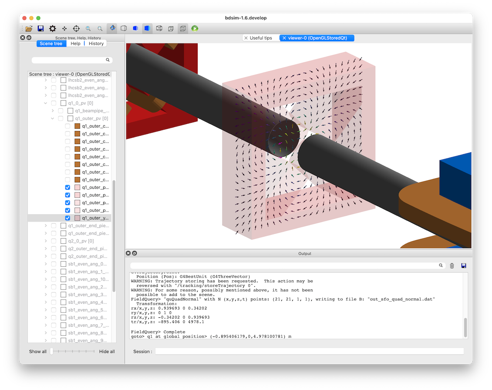
You can find examples in bdsim/examples/features/field/yoke_scaling/. There is
a view point macro that can be loaded in the visualiser (open icon in the top left) to
centre the view nicely and make a quadrupole transparent.
The visualisation consists of arrows and a pixel / voxel for each query point. These can be turned on or off individually, but one must be on. If both magnetic and electric fields are visualised in one query, it is recommended to switch off boxes with
drawBoxes=0.It may be required to make geometry partially transparent to see the field arrows.
4D queries will not work. Only up to 3D is supported.
The visualisation may become very slow if a large (e.g. > 100x100 in x,y) points is used. This is a limitation of the visualisation system in Geant4. Typically, the querying of the model is very quick and it is drawing the arrows that takes time.
Magnetic fields are drawn with the matplotlib “viridis” colour scale and electric fields with the “magma” colour scale.
Both electric and magnetic fields may be visualised as defined by the query object.
A query called in the visualiser will not be written to file.
If the magnitude of the field is 0 at the given query point, a small circular point is drawn instead of an arrow.
The arrow length does not depend on the field magnitude - only the spacing of the query points.
Field Map Preparation
It is not recommended to write a field map file by hand. This can create very hard to identify subtle problems that may lead to unintended behaviour. It is recommended to use our Python utility pybdsim. See the pybdsim manual for details on creating, converting and plotting field maps in Python: http://www.pp.rhul.ac.uk/bdsim/pybdsim/fieldmaps.html.
Note
The order of looping over dimensions is important and must be correct otherwise, the loaded field map may not be as intended. Use of a field map should be validated. BDSIM actually ignores the coordinates in each line of the field map and assumes the looping order and dimension based on the header information.
Field Map Validation
To validate a field map loaded by BDSIM, we can query what is loaded and generate a new output field map that we can then inspect or numerically compare in Python (e.g. using pybdsim). To query a field map, we have a 2 options:
Query the field object as loaded by BDSIM - no 3D model is actually built.
Query a set of coordinates in the full BDSIM model and note the field found at each position.
In both cases, a BDSIM-format field map file is written out.
Note
Magnetic and Electric fields are handled independently and written to separate files, in the same way they are loaded into BDSIM in separate files.
Case 1 uses an extra program provided with BDSIM called bdsinterpolator. This can also
be used to re-interpolate a field map as described in Field Map Interpolation, but we
can use it to simply query the same points again. This program has no concept of a 3D model and
only loads the field map into memory. This provides a class that BDSIM would normally use in the
Geant4 model, however, without any 3D transforms from local (such as curvilinear) to global frames.
Case 2 uses BDSIM itself and a regular input file and the querying is done after construction of the model but before a Run where Events are simulated.
In both cases, an input GMAD file is used that defines a query object. The appropriate program
(bdsim or bdsinterpolator) is then executed with that as an argument. If we have a file
called test-field-map.gmad, then we could do:
bdsim --file=test-field-map.gmad --batch
or:
bdsinterpolator --file=test-file-map.gmad
The following parameters can be used in a query object:
Parameter |
Description |
|---|---|
nx |
Number of points to query in x (1 -> N) |
ny |
Number of points to query in y (1 -> N) |
nz |
Number of points to query in z (1 -> N) |
nt |
Number of points to query in t (1 -> N) |
xmin |
Start of x values to use |
xmax |
Finish of x values to use |
ymin |
Start of y values to use |
ymax |
Finish of y values to use |
zmin |
Start of z values to use |
zmax |
Finish of z values to use |
tmin |
Start of t values to use |
tmax |
Finish of t values to use |
outfileMagnetic |
Name of output file to write field map to (B) |
outfileElectric |
Name of output file to write field map to (E) |
fieldObject |
Name of the field object in the input to query |
queryMagneticField |
(1 or 0) whether to query the magnetic field - default is False (0) |
queryElectricField |
(1 or 0) whether to query the electric field - default is False (0) |
overwriteExistingFiles |
Whether to overwrite existing output files - default is True (1) |
drawArrows |
(1 or 0) Whether to draw arrows if used for visualisation. Default is true. |
drawZeroValuePoints |
(1 or 0) whether to draw a point even if the queried field value is 0 in magnitude. Default is true. Only applies to arrows. |
drawBoxes |
(1 or 0) Whether to draw pixels / voxel boxes for each query point in the visualiser. Default is true. |
boxAlpha |
The transparency value for the boxes. Range from 0 to 1 where 0 is invisible. Default is 0.2. |
printTransform |
(1 or 0) whether to print out the calculated transform from the origin to the global coordinates |
referenceElement |
Element with respect to which the coordinates are desired to be queried |
referenceElementNumber |
Instance of the reference element in the beam line if it is used more than once (0-counting) - default is 0 |
s |
Curvilinear S coordinate (global | local depending on parameters) |
x |
Offset in x |
y |
Offset in y |
z |
Offset in z |
phi |
Euler angle phi for rotation |
theta |
Euler angle theta for rotation |
psi |
Euler angle psi for rotation |
axisX |
Axis angle rotation x-component of unit vector |
axisY |
Axis angle rotation y-component of unit vector |
axisZ |
Axis angle rotation z-component of unit vector |
angle |
Axis angle, angle to rotate about unit vector |
axisAngle |
(1 or 0) use axis angle rotation instead of the Euler angle. |
pointsFile |
Name of a file listing points to be queried instead of the linear range. See below. |
Note
The transforms are made using the same variable names and logic as that of geometry or sampler placements - see Placements for a full description of the possible combination of parameters for the 3 ways of specifying a transform.
The default is to query the magnetic field only and to overwrite files.
The magnetic field will be queried if neither queryMagneticField or queryElectricField are set to 1 (on), but only if neither are specified.
The ranges defined will be queried in the global frame if no transform is specified, otherwise they will be about the point / frame of the transform.
In the case where a reference element is used, the frame includes the offset of that element, so the x,y = 0,0 point is the same as the element even if that is offset from the reference axis of the accelerator.
If you don’t wish to query a dimension, then the number of points should be 1, which is the default and need not be specified.
Units are m and ns by default, the same as BDSIM.
One of queryMagneticField or queryElectricField must be true.
Examples can be found in bdsim/examples/features/fields/query/query*.
An example:
quA: query, nx=51, xmin=-30*cm, xmax=30*cm,
ny=51, ymin=-30*cm, ymax=30*cm,
queryMagneticField=1,
outfileMagnetic="out_query_2d_bfield_xy.dat",
z=1.1*m,
overwriteExistingFiles=1;
Query By Points File
A specific set of points can be queried also. These should be listed in a text file (file extension not important) with one set of coordinates per line.
File rules:
lines with only white-space will be ignored
no comments are permitted
There should be a line at the top starting with ‘!’ and listing the dimensions (x,y,z,t)
The column names and coordinates should be separated by white-space
Any combination of x,y,z,t may be used
The units are fixed in metres for x,y,z and nanoseconds for t.
The file extension is ignored
The output field map is not usable in BDSIM as the header information will be incorrect
Example file contents:
! X Y Z
0 0 1
0 1 1
1 0 1
0 0 0
0 1 0
1 0 0
Or:
! Z
1.1
1.2
1.3
1.4
More examples can be found in bdsim/examples/features/fields/query/query-points*.
Field Map Interpolation
A field map can be loaded and interpolated to generate a new field map. This can be done with the exact same number and range of points as a way of validating the field map was correctly prepared for BDSIM (by seeing the output file is the same as the input).
We could also interpolate the field map with different interpolation methods to compare, or we could increase the density of points and then use a simpler interpolation (more memory, but slightly faster simulation), although this is quite an optimisation step.
A tool, bdsinterpolator, will load a GMAD file and obey only the query
objects defined to generate output field maps.
This does not build a Geant4 model. It simply loads the field map and wraps it in an interpolator. The interpolator is queried for a set of coordinates the resultant field values written out as a field map in BDSIM format. This output file, if desired, can be used in BDSIM subsequently.
This program takes an input GMAD file with a minimum of:
1x field object defined
1x query object defined
Any parameters that are used for the placement transform (“referenceElement” onwards in the table of query parameters in the above section) will be completely ignored. The field is only queried in its own ‘local’ coordinate system in this program.
Examples can be found in bdsim/examples/features/fields/query.
Usage:
bdsinterpolator --file=<my-file.gmad>
If more points are requested in the query in a dimension than are in the original field map, then we are in effect interpolating the field.
If fewer points are requested in the query in a dimension than are in the original field map, we are still interpolating values in the field map, but we are just reducing the ‘resolution’ of the field map.
Example in one gmad file called bdsim/examples/features/fields/maps_bdsim/2d_cubic.gmad:
f1: field, type="bmap2d",
magneticFile = "bdsim2d:2dexample.dat",
magneticInterpolator = "cubic";
q1: query, nx = 200,
xmin = -30*cm,
xmax = 30*cm,
ny = 200,
ymin = -50*cm,
ymax = 50*cm,
outfileMagnetic = "2d_interpolated_linear.dat",
fieldObject = "f1";
Materials and Atoms
All chemical elements are available in BDSIM as well as the Geant4 NIST database
of materials for use. Custom materials and can also be added via the parser. All materials
available in BDSIM can be found by executing BDSIM with the --materials option.
bdsim --materials
Aside from these, several materials useful for accelerator applications are already defined that are listed in Predefined Materials.
Generally, each beam line element accepts an argument “material” that is the material used for that element. It is used differently depending on the element. For example, in the case of a magnet, it is used for the yoke and for a collimator for the collimator block.
Single Element
In the case of an element, the chemical symbol can be specified:
rc1: rcol, l=0.6*m, xsize=1.2*cm, ysize=0.6*cm, material="W";
These are automatically prefixed with G4_ and retrieved from the NIST database of
materials.
The user can also define their own material and then refer to it by name when defining a beam line element.
Custom Single Element Material
If the material required is composed of a single element, but say of a different density or state than the default NIST one provided, it can be defined using the matdef command with the following syntax:
materialname : matdef, Z=<int>, A=<double>, density=<double>, T=<double>, P=<double>, state=<char*>;
Parameter |
Description |
Default |
Z |
Atomic number |
|
A |
Mass number [g/mol] |
|
density |
Density in [g/cm3] |
|
T |
Temperature in [K] |
300 |
P |
Pressure [atm] |
1 |
state |
“solid”, “liquid” or “gas” |
“solid” |
Example:
iron2 : matdef, Z=26, A=55.845, density=7.87;
A compound material can be specified in two manners:
Compound Material by Atoms
If the number of atoms of each component in a material unit is known, the following syntax can be used:
<material> : matdef, density=<double>, T=<double>, P=<double>,
state=<char*>, components=<[list<char*>]>,
componentsWeights=<{list<int>}>;
Parameter |
Description |
density |
Density in [g/cm3] |
components |
List of symbols for material components |
componentsWeights |
Number of atoms for each component in material unit |
Example:
NbTi : matdef, density=5.6, T=4.0, components=["Nb","Ti"], componentsWeights={1,1};
Compound Material by Mass Fraction
On the other hand, if the mass fraction of each component is known, the following syntax can be used:
<material> : matdef, density=<double>, T=<double>, P=<double>,
state=<char*>, components=<[list<char*>]>,
componentsFractions=<{list<double>}>;
Parameter |
Description |
components |
List of symbols for material components |
componentsFractions |
Mass fraction of each component in material unit |
Example:
SmCo : matdef, density=8.4, T=300.0, components=["Sm","Co"], componentsFractions = {0.338,0.662};
The second syntax can also be used to define materials which are composed by other materials (and not by atoms).
Note
Square brackets are required for the list of element symbols, curly brackets for the list of weights or fractions.
New elements can be defined with the atom keyword:
elementname : atom, Z=<int>, A=<double>, symbol=<char*>;
Parameter |
Description |
Z |
Atomic number |
A |
Mass number [g/mol] |
symbol |
Atom symbol |
Example:
myNiobium : atom, symbol="myNb", Z=41, A=92.906;
myTitanium : atom, symbol="myTi", Z=22, A=47.867;
myNbTi : matdef, density=5.6, T=4.0, components=["myNb","myTi"], componentsWeights={1,1};
Predefined Materials
The following elements are available by full name that refer to the Geant4 NIST elements:
aluminium
beryllium
carbon
chromium
copper
iron
lead
magnesium
nickel
nitrogen
silicon
titanium
tungsten
uranium
vanadium
zinc
The following materials are also defined in BDSIM. The user should consult
bdsim/src/BDSMaterials.cc for the full definition of each including
elements, mass fractions, temperature and state.
air (G4_AIR)
airbdsim (previously defined air in bdsim)
aralditef
awakeplasma
berylliumcopper
bn5000
bp_carbonmonoxide
calciumcarbonate
carbonfiber
carbonmonoxide
carbonsteel
cellulose (G4_CELLULOSE_CELLOPHANE)
clay
clayousMarl
concrete
copperdiamond
cu_2k (G4_Cu at 2K)
cu_4k (G4_Cu at 4K)
dy061
epoxyresin3
fusedsilica
gos_lanex
gos_ri1
graphite
graphitefoam
hy906
inermet170
inermet176
inermet180
invar
kapton
lanex
lanex2
laservac (same as vacuum but with different name)
leadtungstate
lhcconcrete
lhc_rock
lhe_1.9k
limousmarl
liquidhelium
marl
medex
molybdenumcarbide (also “mogr”)
mild_steel
n-bk7
nb_87k
nbti.1
nbti_4k
nbti_87k
niobium_2k
nb_2k (niobium_2k)
perspex
pet
pet_lanex
pet_opaque
polyurethane
quartz
rch1000_4k (ultra high molecular weight ethylene)
smco
soil
solidhydrogen
solidnitrogen
solidoxygen
stainless_steel_304L
stainless_steel_304L_2K
stainless_steel_304L_87K
stainless_steel_316LN
stainless_steel_316LN_2K
stainless_steel_316LN_87K
stainlesssteel
ti_87k
titaniumalloy
tungsten_heavy_alloy
ups923a
vacuum
water (G4_WATER)
weightiron
yag
Vacuum and Air
The default “vacuum” material used in all beam pipes is composed of H, C and O with the following fractions:
Element |
Mass Fraction |
|---|---|
H |
0.482 |
C |
0.221 |
O |
0.297 |
The default pressure is 1e-12 bar, the temperature is 300K and the density is 1.16336e-15 g/cm3.
“air” is the G4_AIR material. As of Geant4.10.04.p02 (see geant4/source/materials/src/G4NistMaterialBuilder.cc), it is composed of C, N, O, Ar with the following fractions:
Element |
Mass Fraction |
|---|---|
C |
0.000124 |
N |
0.755267 |
O |
0.231781 |
Ar |
0.012827 |
It is a gas with density of 1.20479 mg/cm3.
Ideal gases
When a new material is added with the parameter state=gas, BDSIM check if the ideal gas law is respected between
the density, pressure and temperature. It is assumed that the density is correct as it is the parameter Geant4 cares
about. If the ideal gas law isn’t respected, the temperature is defaulted to T=300 and the pressure is calculated from
the density.
Note
This check does not apply to Predefined Materials and other materials defined above.
Note
Molar mass calculations can’t distinguish between single atom elements and elements with multiple of the same atom (oxygen and dioxygen for example). This ideal gas calculation is intended for the former case like with noble gases.
Aperture Parameters
For elements that contain a beam pipe, several aperture models can be used. These aperture
parameters can be set as the default for every element using the option command
(see Options) but can also be overridden for each element by specifying
them with the element definition. The aperture is controlled through the following parameters:
apertureType
beampipeRadius or aper1
aper2
aper3
aper4
vacuumMaterial
beampipeThickness
beampipeMaterial
For each aperture model, a different number of parameters are required. Here, we follow the MAD-X convention and have four parameters. The user must specify them as required for that model. BDSIM will check to see if the combination of parameters is valid. beampipeRadius and aper1 are degenerate.
Up to four parameters can be used to specify the aperture shape (aper1, aper2, aper3, aper4). These are used differently for each aperture model and match the MAD-X aperture definitions. The required parameters and their meaning are given in the following table.
A completely custom aperture can be used with pointsfile. See the notes below.
Note
If no beam pipe is desired, apertureType="circularvacuum" can be used that makes
only the vacuum volume without any beam pipe. The vacuum material is the usual vacuum
but can of course can be controlled with vacuumMaterial. So you could create
a magnet with air and no beam pipe.
Note
The default beam pipe material is “stainlesssteel”.
Aperture Model |
# of parameters |
aper1 |
aper2 |
aper3 |
aper4 |
|---|---|---|---|---|---|
circular |
1 |
radius |
NA |
NA |
NA |
rectangular |
2 |
x half-width |
y half-width |
NA |
NA |
elliptical |
2 |
x semi-axis |
y semi-axis |
NA |
NA |
lhc |
3 |
x half-width of rectangle |
y half-width of rectangle |
radius of circle |
NA |
lhcdetailed (*) |
3 |
x half-width of rectangle |
y half-width of rectangle |
radius of circle |
NA |
rectellipse |
4 |
x half-width of rectangle |
y half-width of rectangle |
x semi-axis of ellipse |
y semi-axis of ellipse |
racetrack |
3 |
horizontal offset of circle |
vertical offset of circle |
radius of circular part |
NA |
octagonal |
4 |
x half-width |
y half-width |
x point of start of edge |
y point of start of edge |
clicpcl |
4 |
x half-width |
top ellipse y half-height |
bottom ellipse y half-height |
y separation between ellipses |
circularvacuum |
1 |
radius |
NA |
NA |
NA |
rhombus (+) |
2-3 |
x half-width |
y half-width |
radius of corners |
NA |
pointsfile (**) |
0 |
NA |
NA |
NA |
NA |
Note
(*) lhcdetailed aperture type will result in the beampipeMaterial being ignored
and LHC-specific materials at 2K being used.
Note
(**) For points file, use apertureType="pointsfile:pathtofile.dat:cm";. See below.
Note
(+) For the rhombus aperture, aper1 and aper2 are the maximum extents if there was no radius of curvature for the corners. Therefore, the curved edges ‘eat’ into the shape.
These parameters can be set with the option command, as the default parameters and also on a per element basis that overrides the defaults for that specific element.
In the case of clicpcl (CLIC Post Collision Line), the beam pipe is asymmetric. The centre is the same as the geometric centre of the bottom ellipse. Therefore, aper4, the y separation between ellipses is added on to the 0 position. The parameterisation is taken from Phys. Rev. ST Accel. Beams 12, 021001 (2009).
circular
{kind=link}
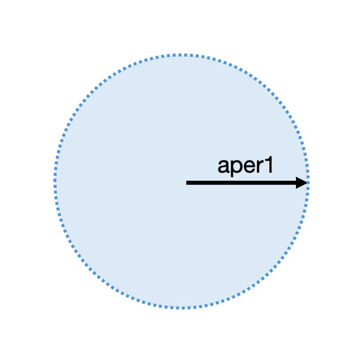
A circular aperture is defined by one parameter, aper1. The beam pipe
thickness is added outside this radius.
Example
d1: drift, aperType="circular",
aper1=5*cm,
beampipeThickness=3*mm;
rectangular
{kind=link}
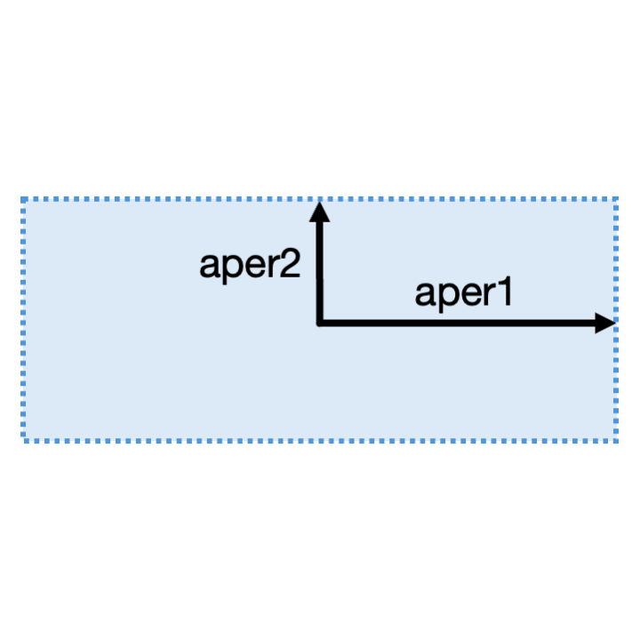
A rectangular aperture is defined by two parameters, aper1 for the horizontal
half width, and aper2 for the vertical half width. The beam pipe
thickness is added outside this aperture.
Example
d1: drift, aperType="rectangular",
aper1=5*cm,
aper2=2.1*cm,
beampipeThickness=3*mm;
elliptical
{kind=link}
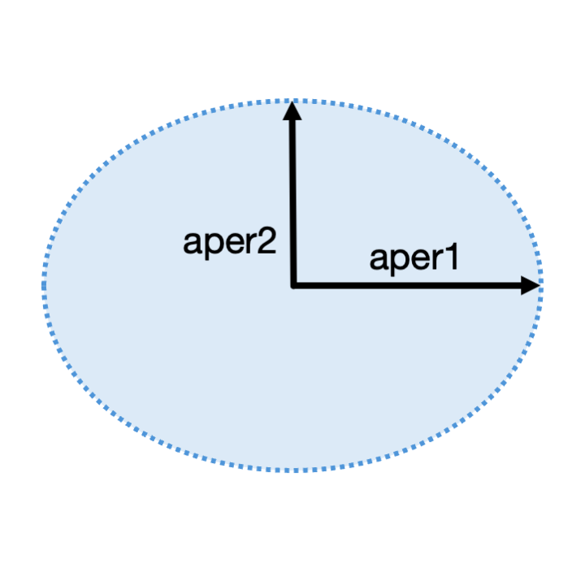
An elliptical aperture is defined by two parameters, aper1 for the horizontal
semi-axis, and aper2 for the vertical semi-axis. The beam pipe
thickness is added outside this aperture.
Example
d1: drift, aperType="elliptical",
aper1=5*cm,
aper2=2.1*cm,
beampipeThickness=3*mm;
lhc
{kind=link}
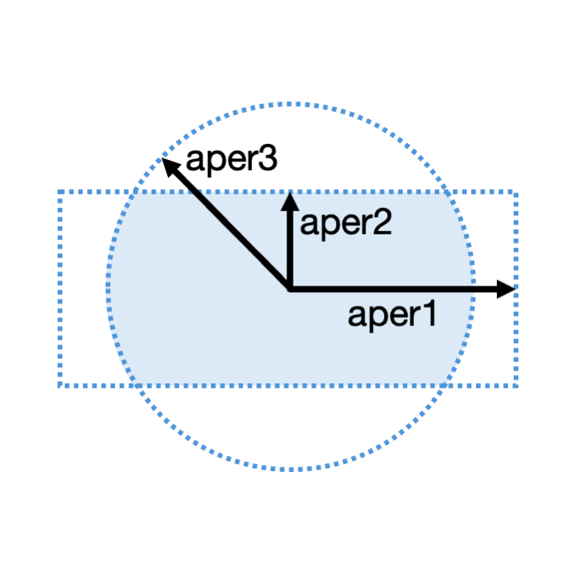
The LHC aperture shape is defined by three parameters. It is the intersection (i.e. only
where both exist) of a circle and a rectangle centred on each other. aper1 is the
horizontal half-width of the rectangle. aper2 is the vertical half-height of the
rectangle. aper3 is the radius of the circle. Depending on these parameters, a similar
shape as shown can be achieved this way or apparently rotated 90 degrees with flat vertical
edges. If aper2 is less than aper3, then the aperture will appear like the
image shown. The beam pipe thickness is added outside this aperture.
|
Example
d1: drift, aperType="lhc",
aper1=2.202*cm,
aper2=1.714*cm,
aper3=2.202*cm
beampipeThickness=1*mm;
lhcdetailed
This aperture type has the same parameters as lhc. However, it includes more
detailed geometry with a circular second outer beam pipe as well as the 70 micron
layer of copper. The beam screen does not have the perforated holes as this was
deemed too detailed and would slow the simulation. This may cause errors if parameters
too far from the authentic LHC aperture parameters are used.
rectellipse
{kind=link}
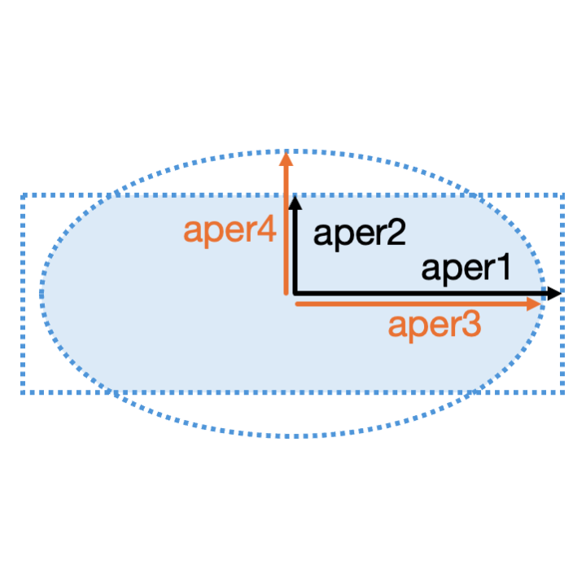
The rectellipse aperture is similar to the LHC aperture shape, but intead of a
circle, it is the intersection of a rectangle and an ellipse. aper1 and
aper2 define the rectangle, and aper3 and aper4 define the
ellipse. The beam pipe thickness is added outside this aperture.
Example
d1: drift, aperType="rectellipse",
aper1=2*cm,
aper2=1*cm,
aper3=2*cm,
aper4=2*cm
beampipeThickness=3*mm;
racetrack
{kind=link}
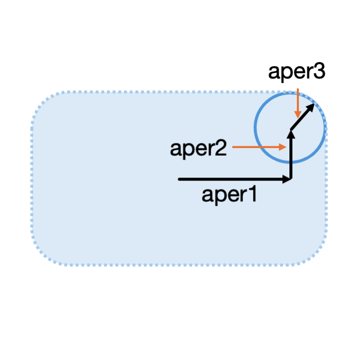
The racetrack aperture is defined by three parameters. The aperture is defined
by a circle with an offset in one quadrant that is then mirrored in all quadrants.
aper1 and aper2 are the horizontal and vertical offsets of the
centre of the circle in the positive quadrant (i.e. positive values). aper3
is the radius of the circle. The horizontal half width is therefore aper1 + `aper3,
and similarly, the vertical half width is aper2 + aper3. The beam pipe
thickness is added outside this aperture.
|
|
Example
d1: drift, aperType="racetrack",
aper1=2*cm,
aper2=1*cm,
aper3=2.4*cm
beampipeThickness=3*mm;
octagonal
{kind=link}
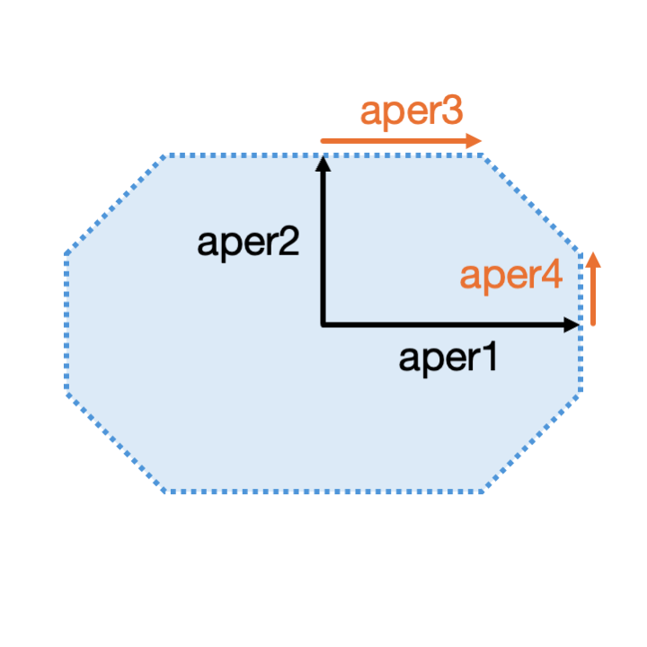
The octagonal aperture is defined by four parameters. aper1 and aper2
definthe the horizontal and vertical half widths respectively of a full rectangle.
aper3 and aper4 define a (smaller) set of horizontal and vertical values
that define the points where the cut-off edge starts. The beam pipe
thickness is added outside this aperture.
Warning
This is not the same set of parameters as MADX, which uses the angles between the origin and each cut-off point. This is particularly hard to use as well as more difficult to implement so was not used in BDSIM. The MADX community wanted to change this but it is kept for backwards compatibility.
Example
d1: drift, aperType="octagonal",
aper1=2*cm,
aper2=1*cm,
aper3=1.1*cm,
aper4=0.5*cm
beampipeThickness=3*mm;
rhombus
{kind=link}
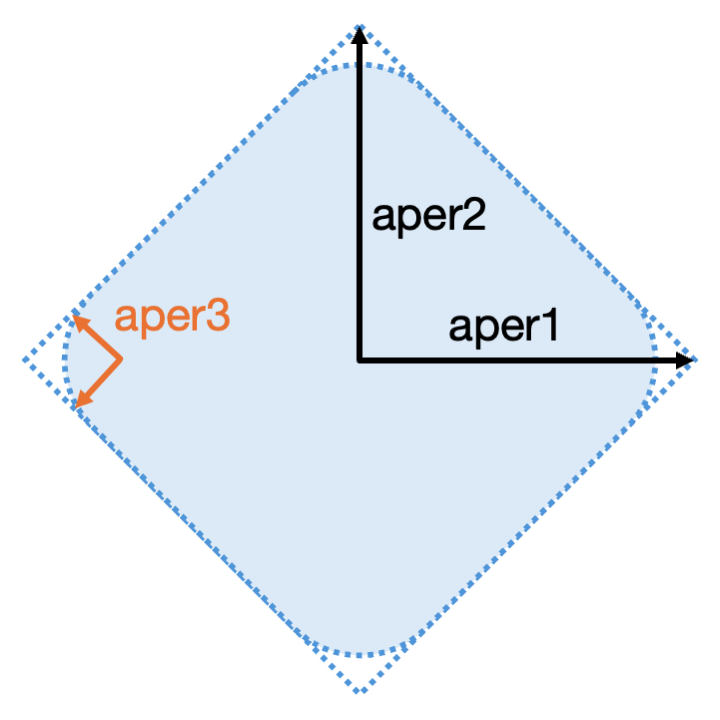
The rhombus aperture is defined by three parameters, aper1 for the horizontal
half width out to the point of a full rhombus, and aper2 for the vertical half width,
again out the point of a full rhombus. aper3 optionally defines the radius of
a circle used for the curved corners. Therefore, a small amount of width is lost at each tip.
The figure shows a rhombus where aper1 = aper2, however, these can be unequal.
The beam pipe thickness is added outside this aperture.
Example
d1: drift, aperType="rhombus",
aper1=3*cm,
aper2=10*cm,
aper3=0.1*cm
beampipeThickness=3*mm;
pointsfile
For pointsfile, a text file can be used to list a set of x,y transverse points to specify a custom shape. No other aperture parameters are required other than the aperture type. The syntax is:
pointsfile:filename.dat:units
The string should contain no spaces and the values separated by colons :. The second
colon and units are optional and if not supplied will be mm.
At least 3 points are required
Each line should contain only 2 numbers
Empty lines will be ignored
Lines starting with
!or#will be ignored.Examples can be found in
bdsim/examples/features/geometry/3_beampipes/12_pointsfile.gmad.The last point must not be duplicated.
The polygon given by the 2D points may be either clockwise or anti-clockwise wound (the order of the points) and BDSIM will internally make it clockwise, which is necessary to calculate the expansion of the polygon for the beam pipe shape.
d1: drift, l=0.2*m, apertureType="pointsfile:12_points.dat:cm", beampipeThickness=2*mm;
d2: drift, l=0.2*m, apertureType="pointsfile:12_points.dat", beampipeThickness=2*mm;
Warning
The user is entirely responsible for defining an enclosed shape and the points must not define lines that cross each other (self-intersecting). The shape may be non-convex. If the shape does not show in the visualiser, check for warnings from Geant4 that would indicate the shape is badly formed.
The example in bdsim/examples/features/geometry/3_beampipes/12_points.dat is generated
by the accompanying Python script createPoints.py. It creates a circle of some radius
with an oscillating boundary. This results in a star shape. The file contents are:
3.0 0.0
3.5594944939586357 0.44966872700413885
3.8269268103510368 0.982587799219406
3.6735994432667844 1.4544809126930356
3.144000183146753 1.7284287271798486
2.4270509831248424 1.7633557568774194
1.7584288736820426 1.6512746244216896
1.3060457301527224 1.5787380878937436
1.0978788199666678 1.7299802010673848
1.0270710863817312 2.1826371600832646
0.9270509831248422 2.85316954888546
0.6722839170258389 3.524235711679308
0.2480888913478514 3.943260008793256
-0.2480888913478518 3.943260008793256
-0.67228391702584 3.524235711679308
-0.9270509831248428 2.853169548885461
-1.0270710863817316 2.1826371600832646
-1.097878819966668 1.7299802010673846
-1.3060457301527224 1.5787380878937436
-1.7584288736820426 1.651274624421689
-2.4270509831248415 1.7633557568774194
-3.144000183146753 1.7284287271798482
-3.673599443266785 1.4544809126930345
-3.8269268103510368 0.982587799219406
-3.559494493958636 0.4496687270041383
-3.0000000000000004 -9.64873589805982e-16
-2.393193713928232 -0.3023306743816869
-1.98457215642075 -0.5095515237697232
-1.9050594720627234 -0.7542664034150331
-2.113839897116428 -1.162093317430443
-2.427050983124841 -1.7633557568774196
-2.6153828908464263 -2.4560080111504425
-2.518498208339415 -3.044341368760992
-2.117081949907311 -3.3359873519447065
-1.5276046630087032 -3.246325154712854
-0.9270509831248429 -2.8531695488854614
-0.4520039704885086 -2.3694877926928246
-0.12865422582802818 -2.044900361776374
0.12865422582802924 -2.0449003617763735
0.45200397048850954 -2.3694877926928233
0.9270509831248415 -2.85316954888546
1.5276046630087043 -3.2463251547128524
2.1170819499073117 -3.335987351944705
2.5184982083394165 -3.044341368760991
2.615382890846429 -2.456008011150442
2.4270509831248446 -1.7633557568774183
2.1138398971164296 -1.1620933174304438
1.9050594720627243 -0.7542664034150321
1.9845721564207497 -0.509551523769722
2.3931937139282304 -0.3023306743816855
And this looks like:

Magnet Geometry Parameters
As well as the beam pipe, magnet beam line elements also have further outer geometry beyond the beam pipe. This geometry typically represents the magnetic poles and yoke of the magnet but there are several geometry types to choose from. The possible different styles are described below and syntax examples can be found in examples/features/geometry/4_magnets/. These are:
External Magnet Geometry (e.g. a GDML file for the yoke)
The magnet geometry is controlled by the following parameters.
Note
These can all be specified using the option command as well as on a per element basis, but in this case they act as a default that will be used if none are specified by the element.
Note
The option ignoreLocalMagnetGeometry exists and if it is true (1), all
per-element magnet geometry definitions will be ignored and the ones specified
in Options will be used.
Note
In the case that the lhcleft or lhcright magnet geometry types are used,
the yoke field will be a sum of two regular yoke fields at the LHC beam pipe
separation. The option yokeFieldsMatchLHCGeometry can be used to control
this. These are described in Multipole Yoke - Dual.
Parameter |
Description |
Default |
Required |
|---|---|---|---|
magnetGeometryType |
The style of magnet geometry to use. One of:
cylindrical, polescircular, polessquare,
polesfacet, polesfacetcrop, lhcleft, lhcright,
none and format:path.
|
polessquare |
No |
horizontalWidth |
Full horizontal width of the magnet (m)
|
0.6 m |
No |
outerMaterial |
Material of the magnet
|
“iron” |
No |
yokeOnInside |
Whether the yoke of a dipole appears on the inside of the
bend and if false, it’s on the outside. Applicable only
to dipoles.
|
1 |
No |
hStyle |
Whether a dipole (only a dipole) will be an H style one
or a C style one (c style by default. True (‘1’) or False
(‘0’).
|
0 |
No |
vhRatio |
The vertical to horizontal ratio of a magnet. The width
will always be the horizontalWidth and the height will
scale according to this ratio. In the case of a vertical
kicker it will be the height that is horizontalWidth (as
the geometry is simply rotated). Ranges from 0.1 to 10.
This currently only applies to dipoles with poled
geometry.
|
0.8 |
No |
coilWidthFraction |
Fraction of the available horizontal space between the
pole and the yoke for dipole geometry that the coil will
occupy. This currently only applies to dipoles with poled
geometry. Ranges from 0.05 to 0.98.
|
0.9 |
No |
coilHeightFraction |
Fraction of the available vertical space between the pole
tip and the yoke for dipole geometry that the coil will
occupy. This currently only applies to dipoles with poled
geometry. Ranges from 0.05 to 0.98.
|
0.9 |
No |
Examples:
option, magnetGeometryType = "polesfacetcrop",
horizontalWidth = 0.5*m;
m1: quadrupole, l=0.3*m,
k1=0.03,
magnetGeometryType="gdml:geometryfiles/quad.gdml",
horizontalWidth = 0.5*m;
Warning
The choice of magnet outer geometry will significantly affect the beam loss pattern in the simulation, as particles and radiation may propagate much further along the beam line when a magnet geometry with poles is used.
Warning
Use of “lhcleft” or “lhcright” will result in the outerMaterial parameter being
ignored and the correct LHC materials being used. The secondary beam pipe included with this
will always be the correct LHC arc aperture and all materials are at 2K.
Note
Should a custom selection of various magnet styles be required for your simulation, please contact us (see Feature Request) and this can be added - it is a relatively simple process.
No Magnet Outer Geometry - “none”
No geometry for the magnet outer part is built at all and nothing is placed in the model. This results in only a beam pipe with the correct fields being provided.
{kind=link}
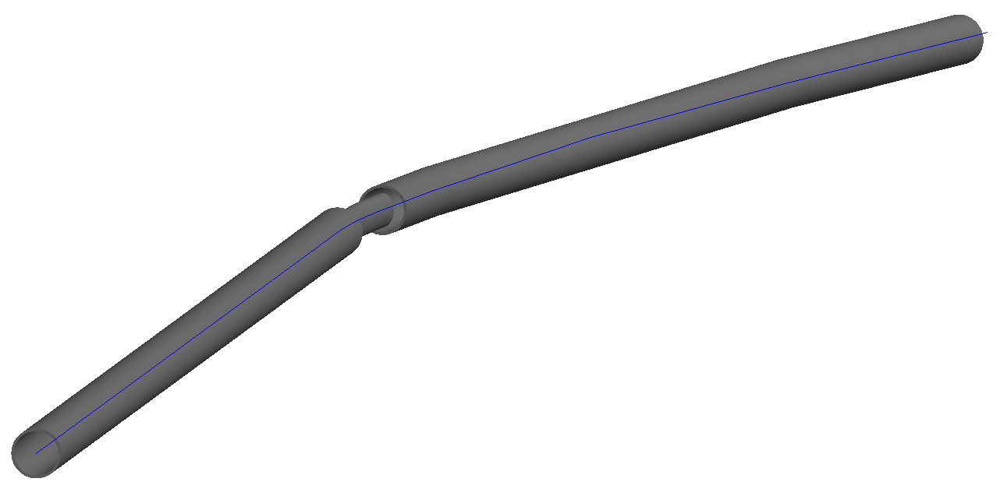
Cylindrical - “cylindrical”
The beam pipe is surrounded by a cylinder of material (the default is iron) whose outer diameter is controlled by the horizontalWidth parameter. In the case of beam pipes that are not circular in cross-section, the cylinder fits directly against the outside of the beam pipe.
This geometry is useful when a specific geometry is not known. The surrounding magnet volume acts to produce secondary radiation as well as act as material for energy deposition, therefore this geometry is best suited for the most general studies.
{kind=link}
{kind=link}
Poles Circular - “polescircular”
This magnet geometry has simple iron poles according to the order of the magnet and the yoke is represented by an annulus. Currently no coils are implemented. If a non-symmetric beam pipe geometry is used, the larger of the horizontal and vertical dimensions of the beam pipe will be used to create the circular aperture at the pole tips.
{kind=link}
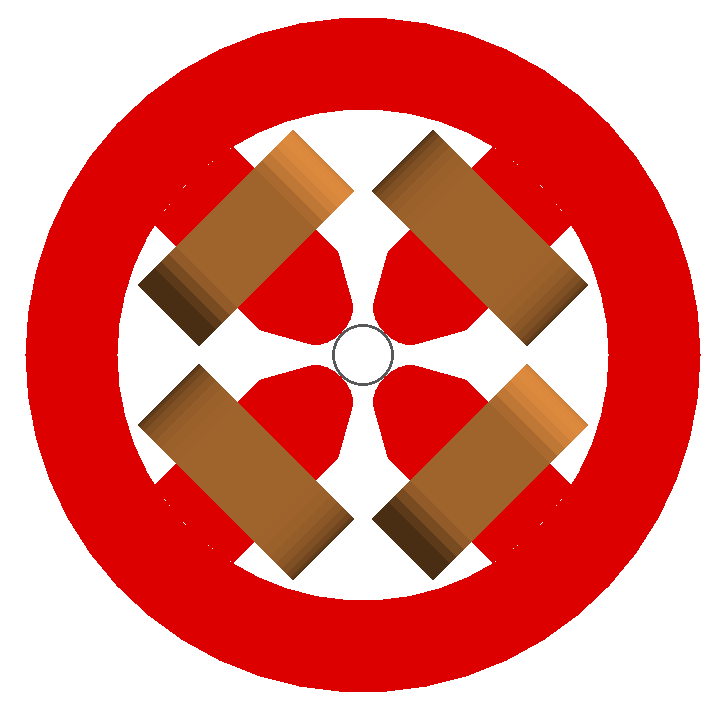
{kind=link}
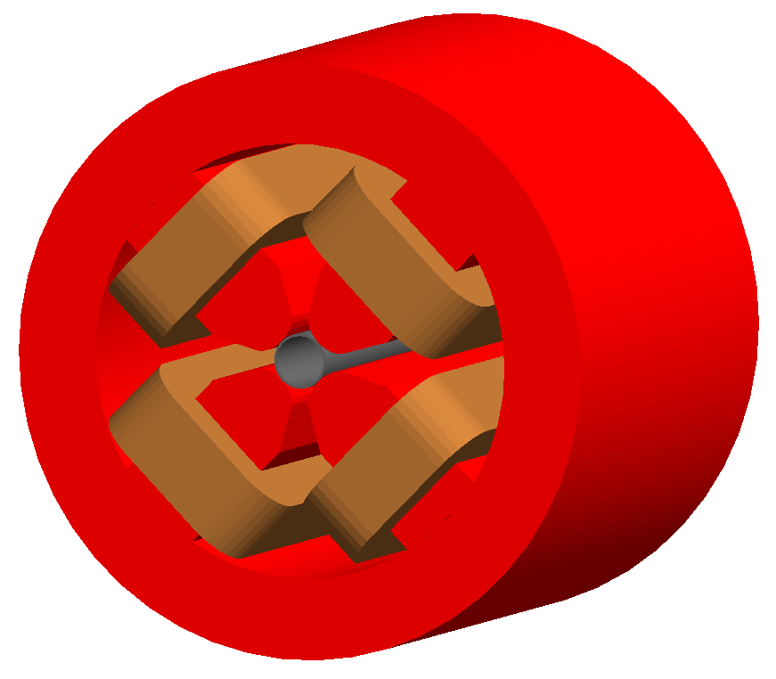
{kind=link}
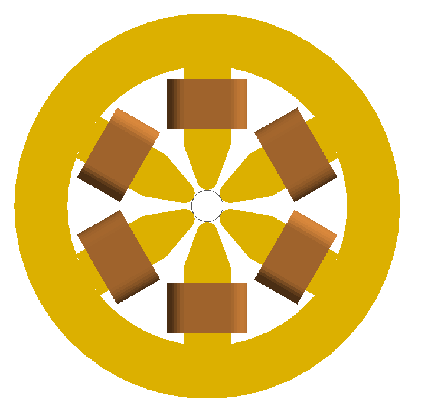
{kind=link}
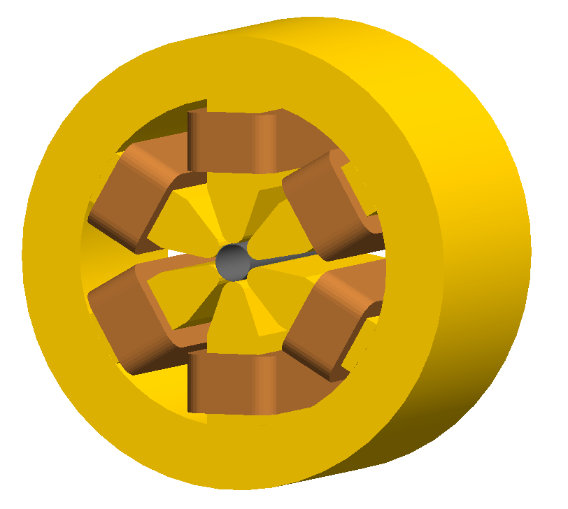
Poles Square (Default) - “polessquare”
This magnet geometry has again, individual poles according to the order of the magnet but the yoke is an upright square section to which the poles are attached. This geometry behaves in the same way as polescircular with regard to the beam pipe size.
horizontalWidth is the full width of the magnet horizontally as shown in the figure below, not the diagonal width.
{kind=link}
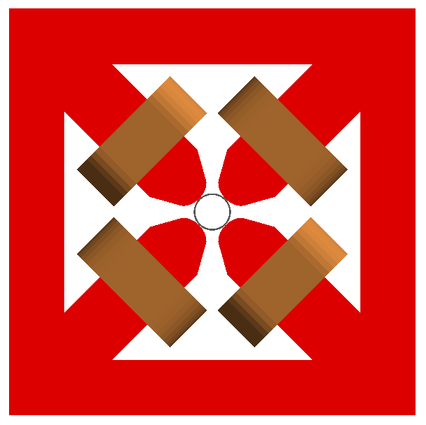
{kind=link}
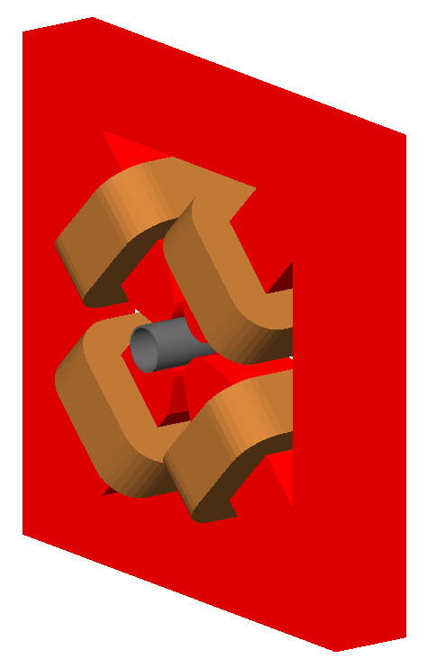
{kind=link}
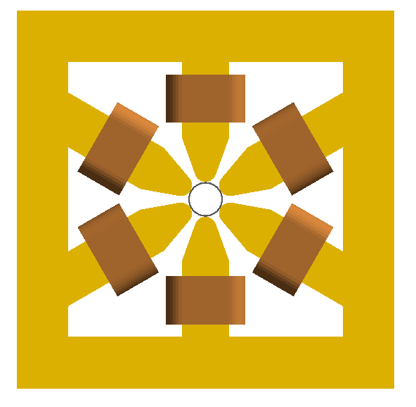
{kind=link}
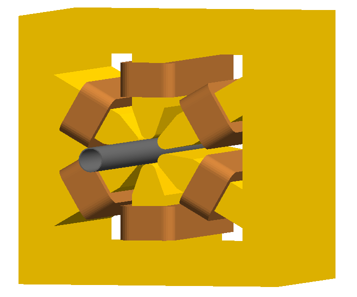
Poles Faceted - “polesfacet”
This magnet geometry is much like polessquare; however, the yoke is such that the pole always joins at a flat piece of yoke and not in a corner. This geometry behaves in the same way as polescircular with regards to the beam pipe size.
horizontalWidth is the full width as shown in the figure.
Warning
In Geant4 V11.0, the visualiser cannot handle the Boolean solids created by this geometry and the poles appear invisible. They are in-fact there, but the Geant4 visualisation system cannot make the 3D meshes for the visualisation.
{kind=link}
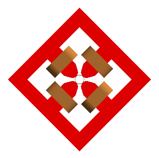
{kind=link}
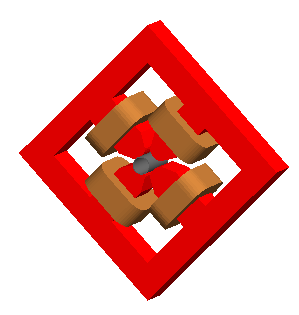
{kind=link}
{kind=link}
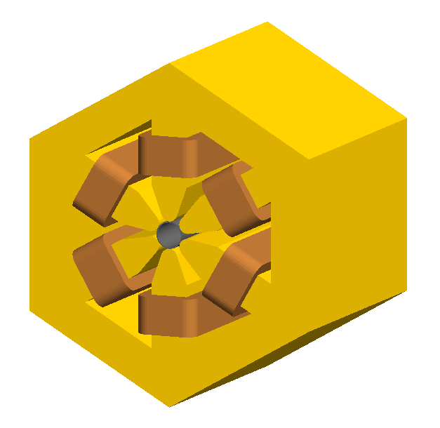
Poles Faceted with Crop - “polesfacetcrop”
This magnet geometry is quite similar to polesfacet, but the yoke in between each pole is cropped to form another facet. This results in the magnet geometry having double the number of poles as sides.
Warning
The poles in this geometry may not appear in the visualiser when using Geant4 V11. This is because of limitations introduced in the Geant4 visualiser Boolean processing engine. The geometry is still there, but just the visualiser can’t generate a 3D mesh for it.
horizontalWidth is the full width horizontally as shown in the figure.
{kind=link}
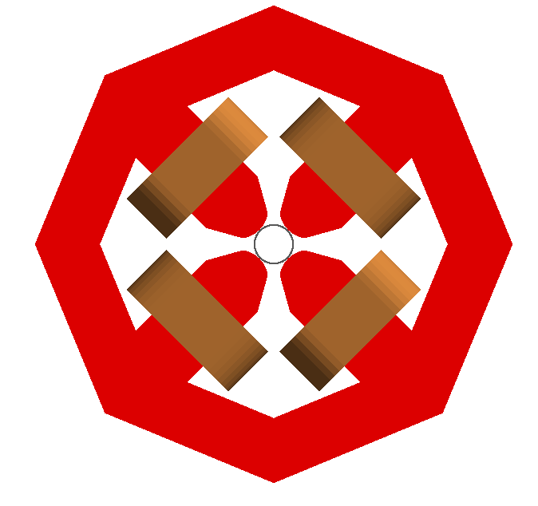
{kind=link}
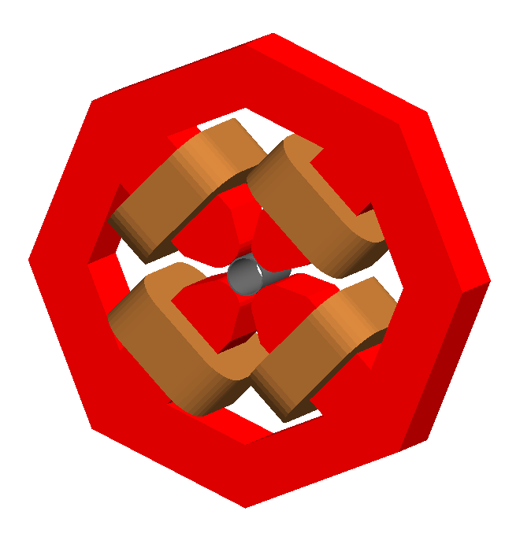
{kind=link}
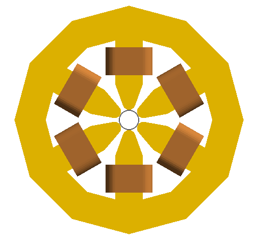
{kind=link}
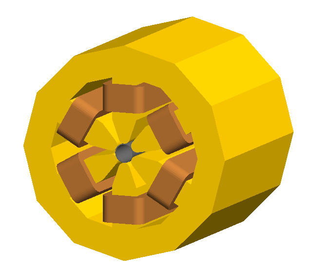
LHC Left & Right - “lhcleft” | “lhcright”
lhcleft and lhcright provide more detailed magnet geometry appropriate for the LHC. Here, the left and right suffixes refer to the shift of the magnet body with respect to the reference beam line. Therefore, lhcleft has the magnet body shifted to the left in the direction of beam travel and the ‘active’ beam pipe is the right one. Vice versa for the lhcright geometry.
For this geometry, only the sbend and quadrupole have been implemented. All other magnet geometry defaults to the cylindrical set.
This geometry is parameterised to a degree regarding the beam pipe chosen. Of course, parameters similar to the LHC make most sense, as does use of the lhcdetailed aperture type. Examples are shown with various beam pipes and both sbend and quadrupole geometries.
outerMaterialis ignored with this choice of geometry.
{kind=link}
{kind=link}
{kind=link}
{kind=link}
External Magnet Geometry
A geometry file may be placed around a beam pipe inside a BDSIM magnet instance. The beam pipe will be constructed as normal and will use the appropriate BDSIM tracking routines, but the yoke geometry will be loaded from the file provided. The external geometry must have a cut out in its container volume for the beam pipe to fit, i.e. both the beam pipe and the yoke exist at the same level in the geometry hierarchy (both are placed in one container for the magnet). The beam pipe is not placed ‘inside’ the yoke. This is shown schematically below:
Geometrical hierarchy of a magnet. Here, a quadrupole is shown, but all magnets have the same geometrical structure even if the specific shapes are different.
Therefore, if using a GDML file for the yoke of the magnet (labelled “outer” in the figure), care should be taken to make the outermost container volume, not just a box, but a box with a cylinder cut out of it, i.e. a Boolean solid.
This will work for solenoid, sbend, rbend, quadrupole, sextupole, octupole, decapole, multipole, muonspoiler, vkicker, hkicker element types in BDSIM.
Example:
q1: quadrupole, l=20*cm, k1=0.0235, magnetGeometryType="gdml:mygeometry/atf2quad.gdml";
autoColour=1 can also be used to automatically colour the supplied geometry by
density if desired. This is on by default. Example to turn it off:
q1: quadrupole, l=20*cm, k1=0.0235, magnetGeometryType="gdml:mygeometry/atf2quad.gdml", autoColour=0;
Cavity Geometry Parameters
A more detailed rf cavity geometry may be described by constructing a ‘cavity’ object in gmad and attaching it by name to an element. The following parameters may be added to a cavity object:
Parameter |
Required |
Description |
|---|---|---|
name |
Yes |
Name of the object |
type |
Yes |
(elliptical | rectangular | pillbox) |
material |
Yes |
The material for the cavity |
irisRadius |
No |
The radius of the narrowest part |
equatorRadius |
No |
The radius of the widest part |
halfCellLength |
No |
Half-length along a cell |
equatorHorizontalAxis |
Elliptical only |
Horizontal semi-axis of the ellipse at the cavity equator |
equatorVerticalAxis |
Elliptical only |
Vertical semi-axis of the ellipse at the cavity equator |
irisHorizontalAxis |
Elliptical only |
Horizontal semi-axis of the ellipse at the iris |
irisVerticalAxis |
Elliptical only |
Vertical semi-axis of the ellipse at the iris |
tangentLineAngle |
Elliptical only |
Angle to the vertical line connecting two ellipses |
thickness |
No |
Thickness of material |
numberOfPoints |
No |
Number of points to generate around 2 \(\pi\). |
numberOfCells |
No |
Number of cells to construct |
Example:
shinyCavity: cavitymodel, type="elliptical",
irisRadius = 35*mm,
equatorRadius = 103.3*mm,
halfCellLength = 57.7*mm,
equatorHorizontalAxis = 40*mm,
equatorVerticalAxis = 42*mm,
irisHorizontalAxis = 12*mm,
irisVerticalAxis = 19*mm,
tangentLineAngle = 13.3*pi/180,
thickness = 1*mm,
numberOfPoints = 24,
numberOfCells = 1;
{kind=link}
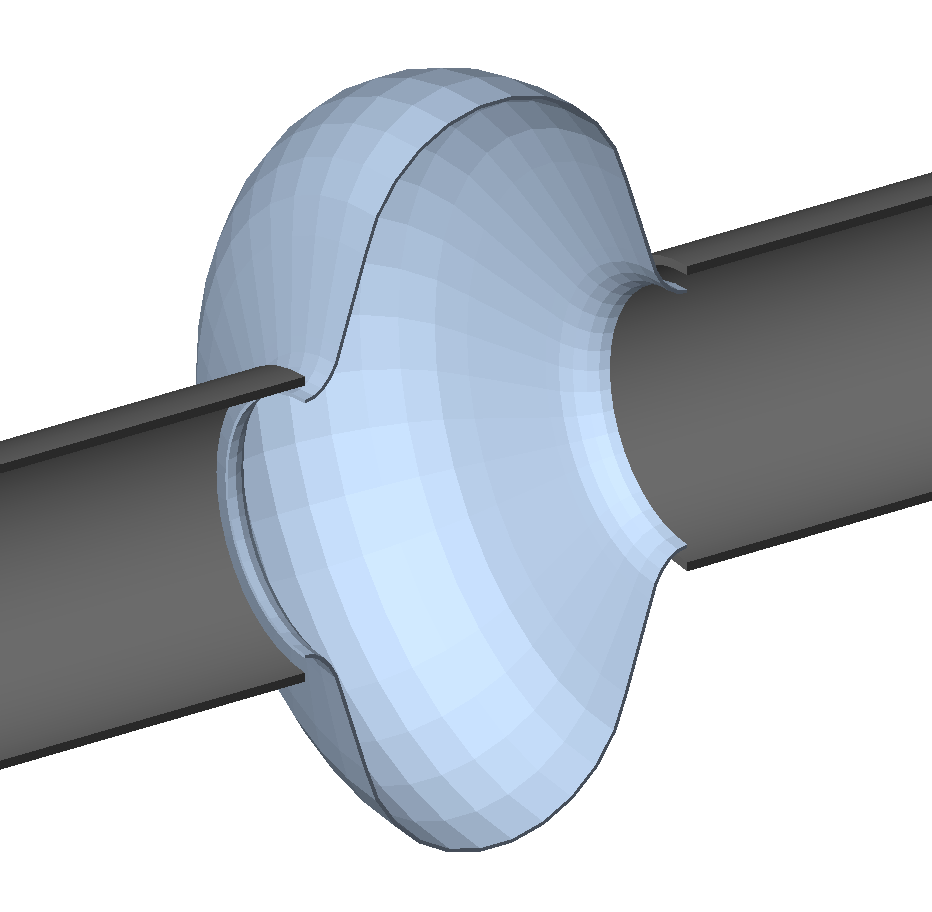
Elliptical cavity geometry example from bdsim/examples/features/geometry/12_cavities/rfcavity-geometry-elliptical.gmad.
The parameterisation used to define elliptical cavities in BDSIM. The symbols used in the figure map to the cavity options according to the table below.
Symbol |
BDSIM Cavity Parameter |
|---|---|
\(R\) |
equatorRadius |
\(r\) |
irisRadius |
\(A\) |
equatorHorizontalAxis |
\(B\) |
equatorVerticalAxis |
\(a\) |
irisHorizontalAxis |
\(b\) |
irisVerticalAxis |
\(\alpha\) |
tangentLineAngle |
\(L\) |
halfCellLength |
Externally Provided Geometry
BDSIM provides the ability to use externally provided geometry in the Geant4 model constructed by BDSIM. Different formats are supported (see Geometry Formats). External geometry can be used in several ways:
A placement of a piece of geometry unrelated to the beam line (see Placements)
Wrapped around the beam pipe in a BDSIM magnet element (see External Magnet Geometry)
As a general element in the beam line where the geometry constitutes the whole object. (see element)
As the world volume in which the BDSIM beamline is placed. (see External World Geometry)
Note
If a given geometry file is reused in different components, it will be reloaded on purpose
to generate a unique set of logical volumes so we have the possibility of different fields,
cuts, regions, colours etc. It will only be loaded once though, if the same component
is used repeatedly. However, specifically for a placement, this can be overridden
by specifying the parameter dontReloadGeometry in the placement definition -
see Placements.
Warning
If including any external geometry, overlaps must be checked in the visualiser by
running /geometry/test/run before the model is used for a physics study.
Geometry Formats
The following geometry formats are supported. More may be added in collaboration with the BDSIM developers - please see Feature Request. The syntax and preparation of these geometry formats are described in more detail in External Geometry Formats.
Format String |
Description |
|---|---|
gdml |
Geometry Description Markup Language - Geant4’s official geometry
persistency format - recommended, maintained and supported
|
mokka |
An SQL style description of geometry - not maintained
|
With the option, checkOverlaps=1; turned on, each externally loaded piece of geometry will also be checked for overlaps.
GDML Geometry Specifics
The Geant4 installation that BDSIM is compiled with repsect to must have GDML support turned on.
BDSIM must be compiled with the GDML build option in CMake turned on for GDML loading to work.
Auxiliary Colour Information
When preparing a GDML file for input to BDSIM, you can supply extra information in the form of
an auxiliary tag in GDML. This is attached the volume and an example is:
<volume name="q2_outer_pole_lv0x600003006e40">
<materialref ref="G4_Fe0x147912550"/>
<solidref ref="q2_outer_pole_solid0x600003006bc0"/>
<auxiliary auxtype="bds_vrgba" auxvalue="1 0.82 0.1 0.1 1"/>
</volume>
The format should be:
<auxiliary auxtype="bds_vrgba" auxvalue="v r g b a"/>
where v is a 1 or 0 for visible or not. r g b a are double values for the
normalised red green blue and alpha colour components. These should range from 0 to 1 (inclusive).
Creating GDML Geometry
To create customised geometry, we recommend our separate (free) Python package, pyg4ometry. This is a Python package that can be used in a script to create Geant4 or FLUKA geometry or convert it into GDML and has many examples. It can also be used to check for overlaps in any GDML file and validate geometry.
See Geometry Preparation for details and links to the software and manual. This package is used for many of the examples included with BDSIM and the Python scripts are included with the examples.
Material Names And Usage
Rules for materials in a GDML file:
A NIST material (e.g.
G4_AIR) may be used by name without full definition. The XML validator may warning that they are undefined - this is ok as true, but they will be available at runtime.A BDSIM predefined material (or indeed one defined in the input GMAD) may be used by name without a full definition in a GDML file. Similarly, there may be a warning from the XML validator, but the material will be available at run time.
A BDSIM material by one of it’s aliases in BDSIM may be used by name, similarly.
It is allowed to define a material inside a GDML file with the same name as one in BDSIM as the GDML preprocessor (see below) will change the name.
Do not define a material fully but with the same name as a NIST material. Whilst Geant4 will construct the material when loading the GDML file, it will attach the material by name and may not find your material definition from the GDML file.
BDSIM will exit if a conflict in naming (and therefore ambiguous materials could be set) is found.
GDML Preprocessing
Geant4’s GDML loader, which BDSIM uses to load GDML files, was only designed to use 1 GDML file. Unlike Geant4’s C++ classes where names to do not matter, in GDML, each object is identified by name. An example of some GDML defining solids is:
<solids>
<box lunit="mm" name="box" x="20" y="30" z="40"/>
<box lunit="mm" name="world" x="200" y="200" z="200"/>
</solids>
When loading a file, if Geant4 finds an object in memory (Geant4’s registries of objects) already with that name, it uses that object instead of reading the one from the file. e.g. in this case, another solid with the name “box”. This can have the unintended consequence of thinking you are loading a piece of geometry but getting a completely different piece! This can cause overlaps, bad tracking and an incorrect model and results. Worse still, it may go unseen.
Note
If including any external geometry, overlaps must be checked in the visualiser by
running /geometry/test/run before the model is used for a physics study.
The most common use of Geant4 is for a detector model where the entire model is written in 1 GDML file, hence this design in Geant4.
However, in BDSIM, we may wish to piece together (like LEGO bricks) many pieces of geometry in and around an accelerator. To compensate for this Geant4 behaviour, we preprocess a GDML file. This means, we create a temporary copy of the file, and change all the names adding a unique string to the beginning of them all - typically the element or placement the GDML file will be used in. This allows us to load multiple files with possibly degenerate names safely.
For each name we change, we must check for any uses elsewhere in the file. Therefore, this can be a \(O(N^2)\) problem with the number of names. In the case of a GDML file that includes a large tessellated solid, each individual 3-vector position is written with it’s own name and this vastly increases the number of names to process.
In this case, it is possible to keep the temporary *preprocessed* file and edit the input GMAD file to use this new file. However, this strategy means that if the GDML file is updated, it has to be preprocessed again and copied and the input edited (not ideal).
option, preprocessGDML=0;
The Schema is a set of rules of what is allowed in the GDML file that generally uses the XML syntax. It defines which tags are allowed and what parameters they can have. This is directed to by the URL at the very top of the file and is found online. e.g.
<?xml version="1.0" ?>
<gdml xmlns:xsi="http://www.w3.org/2001/XMLSchema-instance" xsi:noNamespaceSchemaLocation="http://service-spi.web.cern.ch/service-spi/app/releases/GDML/schema/gdml.xsd">
If however, you need offline access, then BDSIM includes a copy of the latest GDML Schema. During the preprocessing, this is automatically substituted for the one included with BDSIM. If you use a custom Schema or do not wish to use this feature, it can be turned off with:
option, preprocessGDMLSchema=0;
This is independent of the preprocessGDML option above, i.e. with that turned off, but
preprocessGDMLSchema on (by default), we can preprocess only the Schema location.
BDSIM will put the preprocessed GDML files in a temporary directory and remove them once finished. The temporary files can be retained by using the option
option, removeTemporaryFiles=0;.BDSIM will create a temporary directory based on the template name “bdsim_XXXXXX” where the X characters will be replaced by a randomly generated alpha-numeric sequence from the system using mkdtemp.
BDSIM will try
/tmp/, then/temp/, then the current working directory in that order to create the temporary directory. This behaviour can be overridden by specifying the optionoption, temporaryDirectory="/path/to/desired/directory"."./"could be used for example for the current working directory.
The BDSIM GDML preprocessor has some limitations. We cannot support variables in values. In this case, the user should load a GDML file with Geant4 and re-export it. This will ‘flatten’ / resolve any variables, e.g.
<variable name="offsetX" value="3"/>
<position x="offsetX+3" y="0" z="-3|/>
would not work, as the variable “offsetX” is referred to in the value “x” in the position tag.
External World Geometry
External geometry can be supplied as the world volume with the option worldGeometryFile (see Geometry Options). The BDSIM beamline will be placed inside this world volume provided in the file.
option, worldGeometryFile="gdml:myworld.gdml";
Unlike the standard BDSIM world volume whose size is set dynamically, the external world volume will have fixed dimensions, therefore the user should supply a world volume of sufficient size so as to fully encompass the BDSIM beamline. Should the extents of the BDSIM beamline be larger than the world extents, the beamline will not be constructed and BDSIM will exit.
worldGeometryFile should be of the format format:filename, where format is the geometry format being used (gdml | gmad | mokka) and filename is the path to the geometry file. See Externally Provided Geometry for more details.
See also Geometric Importance Sampling for usage of this.
The world material will be taken from the GDML file and the option
worldMaterialwill be ignored. If the optionworldMaterialis specified as well asworldGeometryFile, BDSIM will issue a warning but proceed.The option
autoColourWorldGeometryFilecan be used (default true) to colour the supplied geometry by density. See Automatic Colours for details.The option
biasForWorldContentsmay be used to attach a bias object to the daughter volumes (i.e. excluding the world volume itself) of the loaded world geometry. This is useful for shielding.The option
biasForWorldVolumemay be used to attach a bias object to the world volume itself (only). See Physics Biasing for details.
Warning
Be careful to avoid name clashing if loading multiple GDML files including the world. The usual preprocessGDML option is on to protect against this, but should the user wish, this can be turned off for quicker loading times. The user must therefore ensure no name clashing (i.e. degenerate names for anything between GDML files).
Placements
Aside from a beam line, pieces of geometry may be placed at any location in the world with
any orientation. The mechanism to do this in BDSIM is called “placements”. Either an
externally provided piece of geometry (e.g. GDML file and optional field map) or a BDSIM
provided accelerator component can be placed by declaring a placement object in
the input.
For geometry to be placed as part of the beam line, use the element component in a line.
Warning
If the geometry overlaps, tracking faults may occur from Geant4 as well as incorrect results and there may not always be warnings provided. For this reason, BDSIM will always use the Geant4 overlap checker when placing external geometry into the world volume. This only ensures the container doesn’t overlap with BDSIM geometry, not that the internal geometry is valid.
Warning
You cannot place external geometry ‘inside’ an accelerator component with a placement. Although it may appear OK in the visualiser, the hierarchy of the geometry will be wrong and the tracking will not work as expected. Avoid this.
There are 3 possible ways to place a piece of geometry.
In global Cartesian coordinates.
x, y, z and any rotation are with respect to the world frame of reference.
In curvilinear coordinates.
s, x, y are used along with a rotation. The transform for the distance s along the beamline is first applied. x, y and the rotation are with respect to that frame.
In curvilinear coordinates with respect to a beam line element by name.
The name of an element is used to look up its (mid-point) s coordinate. s, x, y and the rotation are with respect to the centre of that element. Therefore, s in this case is local curvilinear s.
The scenario is automatically selected based on which parameters are set. If s is non-zero, then it is either scenario 2 or 3. If referenceElement is specified, scenario 3 is assumed.
Warning
For both scenarios 2) and 3), a placement can only be made inside the S length of the accelerator - it is not possible to place something beyond the accelerator currently. In this case, the user should resort to a global placement.
Two styles of rotation can be used: either a set of three Euler angles, or the axis-angle rotation scheme, where a unit vector is provided in \(x,y,z\) and an angle to rotate about that. The later is usually easier to imagine.
The following parameters may be specified with a placement in BDSIM:
Parameter |
Description |
geometryFile |
|
stripOuterVolume |
(1 or 0) if true, then remove and discard the outer logical volume from the loaded geometry and turn it into an ‘assembly’ volume with the contents placed with the correct relative transform in the world. |
bdsimElement |
Name of the beam line element defined in the parser to be used |
x |
Offset in global x |
y |
Offset in global y |
z |
Offset in global z |
s |
Curvilinear s coordinate (global | local depending on parameters) |
phi |
Euler angle phi for rotation |
theta |
Euler angle theta for rotation |
psi |
Euler angle psi for rotation |
axisX |
Axis angle rotation x-component of unit vector |
axisY |
Axis angle rotation y-component of unit vector |
axisZ |
Axis angle rotation z-component of unit vector |
angle |
Axis angle, angle to rotate about unit vector |
axisAngle |
Boolean whether to use axis angle rotation scheme (default false) |
sensitive |
Whether the geometry records energy deposition (default true) |
referenceElement |
Name of element to place geometry with respect to (string) |
referenceElementNumber |
Occurrence of referenceElement to place with respect to if it is used more than once in the sequence. Zero counting. |
autoColour |
Boolean whether the geometry should be automatically coloured by density if no colour information is supplied. (default true) |
fieldAll |
Name of field object definition to be used as the field for the whole geometry including all daughter volumes. |
dontReloadGeometry |
(Boolean) Purposively circumvent BDSIM’s reloading of the same geometry file for each placement, i.e. reuse it. This will mean any cuts or fields or sensitivity will be the same. |
Only one of
bdsimElementorgeometryFileshould be used in a placement.bdsimElementshould be used to name a component to place. In this case the component should be defined before the placement definition in the input GMAD.geometryFileshould be used to place an externally provided geometry file.This is intended to place geometry alongside the beam line and not inside or as part of it.
The user is responsible for ensuring that the geometry does not overlap with any other geometry including the beam line.
Only in special cases, such as for a magnet yoke, can externally provided geometry be placed “inside” BDSIM geometry.
The geometry may also have a field map overlaid on it.
Placements cannot be made with respect to other placements.
There is the possibility to strip off the outermost logical volume and place the contents with the compound transform in the world. Useful for preparing for example, shielding. See the parameter below
stripOuterVolume=1.Examples can be found in
bdsim/examples/features/geometry/13_placements.The file path provided in
geometryFileshould either be relative to where bdsim is executed from or an absolute path.The main beam line begins at (0,0,0) by default but may be offset. See Offset for Main Beam Line for more details.
dontReloadGeometryis useful when you have lots of repeated placements of the same thing that is essentially passive material with the same sensitivity e.g. shielding. Specifically, when you don’t want to reload the geometry and don’t want to preprocess it.
referenceElementNumber is the occurrence of that element in the sequence. For example, if a sequence was:
l1: line=(d1,sb1,d2,qd1,d2,df1,d2,sb1,d1);
and we wanted to place with respect to the first element, we would use:
p1: placement, referenceElement="d1",
referenceElementNumber=0;
And the referenceElementNumber argument is optional as the default is 0. If we want to place with respect to the fourth usage of “d2”, we would use:
p1: placement, referenceElement="d2",
referenceElementNumber=3;
If we want to placement at some coordinates with an axis-angle rotation (easier to perceive), we would use:
p1: placement, geometryFile="gdml:anExampleFile.gdml",
x=2*m, y=10*cm, z=30*m,
axisAngle=1,
axisY=1,
angle=pi/4;
This would place with an offset of \(x, y, z = 2, 0.1, 30 m\), then a rotation about the Y axis
of \(\pi/4\). We use the flag axisAngle=1 to turn ‘on’ the axis angle rotation
(instead of the Euler angles one), and axisX, axisY, axisZ are the
components of the unit vector about which to rotate by angle. Each component is by
default 0, so we need only define the axis we want as 1 if aligned with one of the global
axes.
Note
Dipoles are split in BDSIM into many small straight sections. These must have a unique name to appear correctly in the Geant4 visualisation system. The splitting is done dynamically based on the angle of the bend and if it has pole face rotations on one or both sides. The names are mangled and so the original name will not be found. The user should run the visualiser first and identify the name of the segment of the dipole they wish to place with respect to. Alternatively, in the case of low angle bends, the element before or after can be used with a finite s offset.
Note
Geant4 uses a right-handed coordinate system and \(m\) and \(rad\) are the default units for offsets and angles in BDSIM.
External Geometry File
The following is an example syntax used to place a piece of geometry:
leadblock: placement, x = 10*m,
y = 3*cm,
z = 12*m,
geometryFile="gdml:mygeometry/detector.gdml";
BDSIM Component
The following is an example of placing a single BDSIM-generated component at an arbitrary position:
block1: rcol, l=1*m, material="Cu";
pl1: placement, bdsimElement="block1", x=2*m, z=20*m, axisAngle=1, axisY=1, angle=pi/4;
Warning
Care must be taken not to define the same placement name twice. If leadblock were declared again here, the first definition would be updated with parameters from the second, leading to possibly unexpected geometry.
Note
For using a general piece of geometry as part of a beam line, it is better to use the element beam line element. See element. The length should be specified accurately and then the beam line will fit together well without any air gaps.
Tunnel Geometry
BDSIM can build a tunnel around the beam line. Currently, there are two main ways to control this.
The tunnel follows the beam line, bending automatically (recommended)
The tunnel is just built in a straight line - this may be useful for linear colliders but may also cause geometry overlaps (the user is responsible for checking this!)
Warning
With option 2, the user is entirely responsible to ensure no overlaps occur (through good design).
Examples of tunnel geometry can be found with the BDSIM source code in
bdsim/examples/features/geometry/tunnel* and are described in Tunnel Geometry.
The automatic tunnel building is controlled through the following options used with the
option command.
Tunnel Parameters |
Default |
Description |
|---|---|---|
buildTunnel |
0 (false) |
Whether to build a tunnel |
buildTunnelStraight |
0 (false) |
Whether to build a tunnel, ignoring the beamline and just in a straight line |
buildTunnelFloor |
1 (true) |
Whether to add a floor to the tunnel |
tunnelIsInfiniteAbsorber |
0 (false) |
Whether all particles entering the tunnel material should be killed or not |
tunnelType |
“circular” |
Which style of tunnel to use - one of: “circular`, “elliptical”, “square”, “rectangular” |
tunnelAper1 |
2 |
Tunnel aperture parameter #1, typically horizontal (m) |
tunnelAper2 |
2 |
Tunnel aperture parameter #2, typically vertical (m) |
tunnelThickness |
0.1 |
Thickness of tunnel wall (m) |
tunnelSoilThickness |
1.0 |
Soil thickness outside tunnel wall (m) |
tunnelMaterial |
“concrete” |
Material for tunnel wall |
soilMaterial |
“soil” |
Material for soil outside tunnel wall |
tunnelOffsetX |
0 |
Horizontal offset of the tunnel with respect to the beam line reference trajectory |
tunnelOffsetY |
0 |
Vertical offset of the tunnel with respect to the beam line reference trajectory |
tunnelFloorOffset |
1.0 |
The offset of the tunnel floor from the centre of the tunnel (not the beam line). Must be positive. |
Example:
option, buildTunnel = 1,
tunnelOffsetX = -35*cm,
tunnelOffsetY = 30*cm,
tunnelAper1 = 220*cm,
tunnelThickness = 30*cm,
tunnelSoilThickness = 23*m;
These parameters are shown schematically in the figure below (gaps not to scale, elliptical shown as an example).
The soil around the tunnel is typically symmetric, with the tunnelSoilThickness being added to the larger of the horizontal and vertical tunnel dimensions.
Construction of the tunnel geometry may fail in particular cases of different beam lines. Beam lines with very strong bends ( > 0.5 rad) over a few metres may cause overlapping geometry. In future, it will be possible to override the automatic algorithm between certain elements in the beamline, but for now such situations must be avoided.
Note
Surrounding the beam line with a tunnel completely means that every particle simulated
will have to eventually hit something and not escape. This means that every single particle
will likely create a shower of particles down to 0 energy. This can increase simulation time.
To avoid this, or at least control this behaviour, it is recommended to use the options
minimumKineticEnergyTunnel or tunnelIsInfiniteAbsorber.
Crystals
To use various crystal components in BDSIM such as crystalcol, a crystal definition must first be made. This contains all of the required information to construct the crystal. The following parameters are required:
Parameter |
Description |
|---|---|
material |
Material that the crystal will be composed of |
data |
Path to data files, including first part of file name |
shape |
Geometry used - one of (box, cylinder, torus) |
lengthX |
X-dimension full length [m] |
lengthY |
Y-dimension full length [m] |
lengthZ |
Z-dimension full length [m] |
sizeA |
Unit cell a dimension [m]* |
sizeB |
Unit cell b dimension [m]* |
sizeC |
Unit cell c dimension [m]* |
alpha |
Interaxial angle \(\alpha\) in units of \(\pi/2\) |
beta |
Interaxial angle \(\beta\) in units of \(\pi/2\) |
gamma |
Interaxial angle \(\gamma\) in units of \(\pi/2\) |
spaceGroup |
Space grouping of lattice (integer) |
bendingAngleYAxis |
Angle that the crystal is bent about Y-axis [rad]. |
bendingAngleZAxis |
Angle that the crystal is bent about Z-axis [rad]. |
(*) Note, the units of metres may seem ridiculous, but the parser is consistently in S.I. (or as much as possible). We recommend using units in the parser such as Angstroms. See Coordinates & Units.
Note
Depending on the shape chosen, the geometry may or may not represent the bending angle. The bendingAngleYAxis is always supplied to the channelling physics process irrespective of the geometry. This is important to note that the crystal may be a box, but the ‘crystal’ inside (in terms of the physics process) is not related to the geometry and is bent. The physical geometry is merely a volume where the crystal parameters apply.
Note
If there is no vertical bending angle, the torus geometry will reduce to the cylinder geometry, as this is faster for tracking. Similarly, if the cylinder is used and there is no horizontal bending angle, a box will be used, as it’s not possible to construct a cylinder with an infinite bending radius.
It is entirely possible to add more shapes to the code. Please contact the developers Feature Request.
Examples:
lovelycrystal: crystal, material = "G4_Si",
data = "data/Si220pl",
shape = "box",
lengthY = 5*cm,
lengthX = 0.5*mm,
lengthZ = 4*mm,
sizeA = 5.43*ang,
sizeB = 5.43*ang,
sizeC = 5.43*ang,
alpha = 1,
beta = 1,
gamma = 1,
spaceGroup = 227,
bendingAngleYAxis = 0.1*rad,
bendingAngleZAxis = 0;
uglycrystal: crystal, material = "G4_Si",
data = "data/Si220pl",
shape = "box",
lengthY = 5*cm,
lengthX = 0.5*mm,
lengthZ = 4*mm,
sizeA = 5.43*ang,
sizeB = 5.43*ang,
sizeC = 5.43*ang,
alpha = 1,
beta = 1,
gamma = 1,
spaceGroup = 227,
bendingAngleYAxis = -0.1*rad,
bendingAngleZAxis = 0;
More examples can be found in Crystals.
Colours
Most items allow you to define a custom colour for them to aid in visualisation. This includes all magnets and collimators, the shield and degrader. The colour can be defined with red, green and blue components, as well as a level of transparency, alpha. RGB values can range from 0 to 255. Once defined, a colour may not be redefined. The syntax to define a colour is
NAME: newcolour, red=#, green=#, blue=#, alpha=#
Examples:
purple: newcolour, red=128, green=0, blue=128;
col1: rcol, l=0.2*m, xsize=5*cm, ysize=4*cm, colour="purple", material="copper";
and:
purple: newcolour, red=128, green=0, blue=128;
orange: newcolour, red=255, green=140, blue=0;
nicegreen: newcolour, red=0, green=128, blue=0;
d1: drift, l=1*m;
basebend: sbend, l=2*m, angle=0.9;
sb1: basebend, colour="purple";
sb3: basebend, colour="nicegreen";
sb4: basebend, colour="yellow";
sb5: basebend, colour="orange";
sb6: basebend, colour="red";
beamline: line=(d1,sb1,d1,basebend,d1,sb3,d1,sb4,d1,sb5,d1,sb6,d1);
use, beamline;
sample, all;
beam, particle="proton",
energy= 50*GeV;
This examples if from bdsim/examples/features/visualisation/coloured_sbend.gmad and produces the model shown below.
{kind=link}
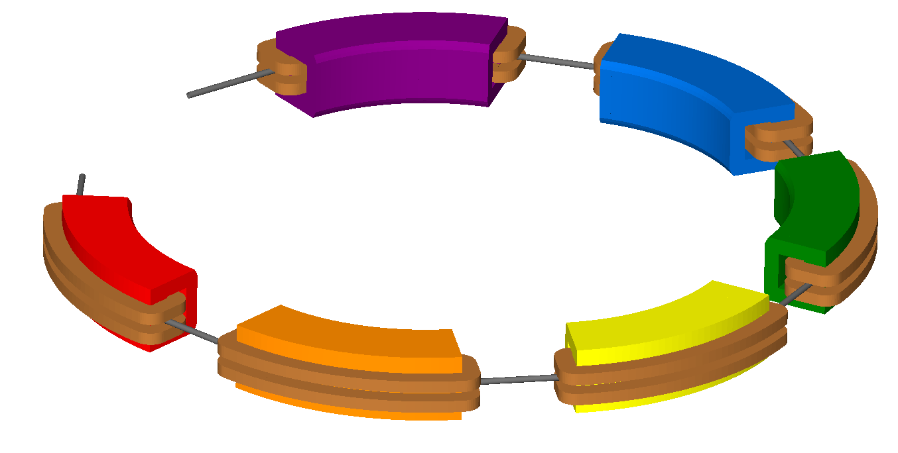
Colours can only be specified on an element-by-element basis.
Colour names are case-sensitive.
New colour names must not clash with predefined BDSIM colour names.
All available colours in BDSIM can be found by running BDSIM with the --colours command:
bdsim --colours
For convenience the predefined colours in BDSIM are:
Name |
R |
G |
B |
A |
|---|---|---|---|---|
LHCcoil |
229 |
191 |
0 |
1 |
LHCcollar |
229 |
229 |
229 |
1 |
LHCcopperskin |
184 |
133 |
10 |
1 |
LHCyoke |
0 |
127 |
255 |
1 |
LHCyokered |
209 |
25 |
25 |
1 |
awakescreen |
175 |
196 |
222 |
1 |
awakespectrometer |
0 |
102 |
204 |
1 |
beampipe |
102 |
102 |
102 |
1 |
black |
0 |
0 |
0 |
1 |
blue |
0 |
0 |
255 |
1 |
brown |
114 |
63 |
0 |
1 |
coil |
184 |
115 |
51 |
1 |
collimator |
63 |
102 |
51 |
1 |
copper |
184 |
115 |
51 |
1 |
crystal |
175 |
196 |
222 |
1 |
cyan |
0 |
255 |
255 |
1 |
decapole |
76 |
51 |
178 |
1 |
default |
229 |
229 |
229 |
1 |
degrader |
159 |
159 |
159 |
1 |
dipolefringe |
229 |
229 |
229 |
1 |
drift |
102 |
102 |
102 |
1 |
ecol |
63 |
102 |
51 |
1 |
element |
229 |
229 |
229 |
1 |
gap |
229 |
229 |
229 |
1 |
gdml |
102 |
51 |
0 |
1 |
gray |
127 |
127 |
127 |
1 |
green |
0 |
255 |
0 |
1 |
grey |
127 |
127 |
127 |
1 |
hkicker |
76 |
51 |
178 |
1 |
iron |
129 |
81 |
74 |
1 |
jcol |
63 |
102 |
51 |
1 |
kapton |
236 |
96 |
20 |
0.5 |
kicker |
0 |
102 |
204 |
1 |
lead |
96 |
104 |
115 |
1 |
magenta |
255 |
0 |
255 |
1 |
marker |
229 |
229 |
229 |
1 |
multipole |
118 |
135 |
153 |
1 |
muonspoiler |
0 |
205 |
208 |
1 |
octupole |
0 |
153 |
76 |
1 |
opaquebox |
51 |
51 |
51 |
0.2 |
paralleltransporter |
229 |
229 |
229 |
1 |
quadrupole |
209 |
25 |
25 |
1 |
rbend |
0 |
102 |
204 |
1 |
rcol |
63 |
102 |
51 |
1 |
reallyreallydarkgrey |
51 |
51 |
51 |
1 |
rectangularbend |
0 |
102 |
204 |
1 |
red |
255 |
0 |
0 |
1 |
rf |
118 |
135 |
153 |
1 |
rfcavity |
118 |
135 |
153 |
1 |
rfx |
118 |
135 |
153 |
1 |
rfy |
118 |
135 |
153 |
1 |
rmatrix |
229 |
229 |
229 |
1 |
sbend |
0 |
102 |
204 |
1 |
screen |
175 |
196 |
222 |
1 |
screenframe |
178 |
178 |
178 |
0.4 |
sectorbend |
0 |
102 |
204 |
1 |
sextupole |
255 |
204 |
0 |
1 |
shield |
138 |
135 |
119 |
1 |
soil |
138 |
90 |
0 |
0.4 |
solenoid |
255 |
139 |
0 |
0.7 |
srfcavity |
175 |
196 |
222 |
1 |
target |
63 |
102 |
51 |
1 |
thinmultipole |
229 |
229 |
229 |
1 |
thinrmatrix |
229 |
229 |
229 |
1 |
tkicker |
0 |
102 |
204 |
1 |
traj_negative |
204 |
0 |
0 |
1 |
traj_neutral |
51 |
178 |
0 |
0.2 |
traj_positive |
0 |
51 |
229 |
1 |
tunnel |
138 |
135 |
119 |
1 |
tunnelfloor |
127 |
127 |
114 |
1 |
undulator |
159 |
159 |
159 |
1 |
vkicker |
186 |
84 |
211 |
1 |
warning |
255 |
19 |
146 |
1 |
water |
0 |
102 |
204 |
0.5 |
white |
255 |
255 |
255 |
1 |
wirescanner |
138 |
135 |
119 |
1 |
yellow |
255 |
255 |
0 |
1 |
Automatic Colours
In the case where an automatic colouring option is used, BDSIM can automatically assign a colour to volumes based on their material for visualisation purposes. This is done with a set of predefined ones for common elements and materials, and then the fall back is to use the state and the density. The materials state sets the opacity and the density is used to scale a grey colour. In all cases, the geometry will be visible.
Regions
In Geant4, it is possible to have different regions - each with their own production cuts and user limits. A “region” in Geant4 terms is a collection of Logical Volumes that have the same set of production cuts and don’t necessarily have to be beside each other.
Production cuts are a length scale over which the simulation is considered correct and can roughly be thought of as the length a secondary would have to travel in that material to be tracked.
In BDSIM, there is one default region that applies everywhere. It is controlled
by option, defaultRangeCut along with the other options prodCutXXXX
(see Physics Processes).
The defaultRangeCut acts as a default for the 4 possible range cuts for
protons, photons, electrons and positrons, unless their prodCutXXXX option
is specified. Aside from the global options, a custregion object may be
declared that defines a set of range cuts. This object can then be attached to
beam line elements. For example:
precisionRegion: cutsregion, prodCutProtons=1*m,
prodCutElectrons=10*m,
prodCutPositrons=10*m,
prodCutPhotons = 1*mm;
d1: drift, l=10*m, region="precisionRegion";
The following parameters are available in the cutsregion object and as global options:
Parameter |
Description |
|---|---|
defaultRangeCut |
The default range cut for this object. |
prodCutProtons |
The range cut for protons. |
prodCutPhotons |
The range cut for photons / gammas. |
prodCutElectrons |
The range cut for electrons. |
prodCutPositrons |
The range cut for positrons. |
Geant4 translates these range cuts into an energy per particle type per material. This method is documented as being much more physically accurate than a simple energy cut across all volumes for all particle types. i.e. the computation time can be reduced but the physical accuracy maintained in areas of vastly different density.
The default for Geant4 is 1 mm or 0.7 mm depending on the version. This approximately corresponds to keV energy scales in air for most particles.
The related energies in various materials do not scale linearly or continuously with the range parameter. This is OK.
Warning
Setting a length scale longer or larger than the beam line element or volume the region will be used in may result in inaccurate physics result and peaks and troughs in energy deposition around boundaries.
If the option, defaultRangeCut is set, this will be the default for the other options if not specified.
If defaultRangeCut is not specified in a cutsregion object, the default for each range will be the corresponding range from the options. e.g. option, prodCutProtons will be the default for prodCutProtons in a cutsregion object if defaultRangeCut is not specified in the object.
See
bdsim/examples/features/processes/regionsfor documented examples.
One Turn Map
Geant4 mandates that there are no overlaps between solids, which in BDSIM means that a thin 1 nm gap is placed between each lattice element. Whilst these thin gaps have a negligible effect for a single pass or turn, over several turns it introduces a sizeable inaccuracy in the tracking (in the context of large circular models). To correct for this, BDSIM models can be supplemented with a one turn map which is applied at the end of each turn to right the primary back onto the correct trajectory. To ensure physical results the one turn map is only applied to primaries, if they did not interact on the previous turn, and if they are within 5% of the reference momentum. The one turn map is also not applied on the first turn where there the beam is offset in S, but applied on following turns, still accounting for the exceptions mentioned above.
The map must be of the format as written by MAD-X-PTC’s PTC_NORMAL
command. A one turn map (in this case, 12th order) can be generated
in MAD-X with the following
PTC_CREATE_UNIVERSE;
PTC_CREATE_LAYOUT, model=2,method=6,nst=10, exact=true, resplit, xbend;
PTC_NORMAL,maptable,icase=5,no=12;
write, table="map_table", file="my_oneturn_map_file";
PTC_END;
To use then use the one turn map with BDSIM
option, ptcOneTurnMapFileName="path/to/my_oneturn_map_file";
This can only be used with circular machines.